import re
import numpy as np
import pandas as pd
import matplotlib.pyplot as plt
from matplotlib.colors import LinearSegmentedColormap
from IPython.display import Markdown, display
from gridiron import style
from gridiron.data import pbp, nfl
style.apply()
SEASONS = range(2016, 2026) # ten completed seasons, 2016-2025
COLS = ["season", "season_type", "week", "game_id", "play_id", "posteam", "defteam", "play_type",
"pass", "qb_dropback", "down", "ydstogo", "yardline_100", "qtr", "half_seconds_remaining",
"game_seconds_remaining", "score_differential", "wp", "xpass", "pass_oe", "epa", "success"]
raw = pbp(SEASONS, columns=COLS)
# Scrimmage snaps: designed runs and dropbacks (sacks and scrambles count as dropbacks).
# Kneels, spikes, kicks and snaps wiped out by a penalty are left out.
plays = raw[(raw.season_type == "REG") & raw.play_type.isin(["pass", "run"])
& raw.down.notna() & raw.wp.notna()].copy()
def is_neutral(d, early_downs=True):
"""The course's neutral situation: win probability 20-80% and more than two minutes left in
the half. For play-calling tendencies, first and second down only."""
m = d.wp.between(0.20, 0.80) & (d.half_seconds_remaining > 120)
return m & (d.down <= 2) if early_downs else m
plays["neutral"] = is_neutral(plays, early_downs=False)
plays["early_neutral"] = is_neutral(plays)
# Charting: personnel, box count, rushers and coverage (participation, 2018-2025) and
# quarterback alignment, motion, play-action, no-huddle and blitzers (FTN, 2022-2025).
part = (nfl().load_participation(list(range(2018, 2026))).to_pandas()
.rename(columns={"nflverse_game_id": "game_id"})
[["game_id", "play_id", "offense_personnel", "defense_personnel", "defenders_in_box",
"number_of_pass_rushers", "defense_man_zone_type", "defense_coverage_type"]])
ftn = (nfl().load_ftn_charting([2022, 2023, 2024, 2025]).to_pandas()
.rename(columns={"nflverse_game_id": "game_id", "nflverse_play_id": "play_id"})
[["game_id", "play_id", "qb_location", "is_motion", "is_play_action", "is_no_huddle", "is_rpo",
"is_screen_pass", "n_blitzers", "n_pass_rushers"]])
snaps = (plays[plays.season >= 2018]
.merge(part, on=["game_id", "play_id"], how="left")
.merge(ftn, on=["game_id", "play_id"], how="left"))
assert len(snaps) == (plays.season >= 2018).sum() # no duplicated snaps from the joins
for c in ["is_motion", "is_play_action", "is_no_huddle", "is_rpo", "is_screen_pass"]:
snaps[c] = snaps[c].astype(float) # True/False/missing -> 1/0/NaN
def position_counts(s):
"""'1 C, 2 G, 1 QB, 1 RB, 2 T, 1 TE, 3 WR' (2023 on) or '6 OL, 1 RB, 1 TE, 2 WR' (before;
'OL' appears only when there are extra linemen) -> {'C': 1, 'G': 2, ...}."""
return {k: int(v) for v, k in re.findall(r"(\d+) ([A-Z]+)", s)} if isinstance(s, str) else None
counts = snaps.offense_personnel.map(position_counts)
snaps["pers"] = counts.map(lambda n: f"{n.get('RB', 0) + n.get('FB', 0)}{n.get('TE', 0)}" if n else None)
snaps["ol"] = counts.map(lambda n: n.get("C", 0) + n.get("G", 0) + n.get("T", 0) + n.get("OL", 0) if n else np.nan)
# heavy: 2+ backs, 3+ tight ends, or a sixth offensive lineman (jumbo), which "11"/"12" codes hide
snaps["heavy"] = counts.map(lambda n: float(n.get("RB", 0) + n.get("FB", 0) >= 2 or n.get("TE", 0) >= 3
or n.get("C", 0) + n.get("G", 0) + n.get("T", 0) + n.get("OL", 0) >= 6)
if n else np.nan)
loc = snaps.qb_location.where(snaps.qb_location.isin(["U", "S", "P"]))
snaps["uc"] = (loc == "U").astype(float).where(loc.notna())
snaps["pistol"] = (loc == "P").astype(float).where(loc.notna())
# Coverage: labelled dropbacks only ("blown" and "combination" tags, and prevent, set aside).
TWO_HIGH = ["COVER_2", "2_MAN", "COVER_4", "COVER_6"]
cov = snaps[(snaps.qb_dropback == 1) & snaps.defense_coverage_type.notna()
& ~snaps.defense_coverage_type.isin(["BLOWN", "COMBO", "PREVENT"])].copy()
cov["man"] = (cov.defense_man_zone_type == "MAN_COVERAGE").astype(float)
cov["two_high"] = cov.defense_coverage_type.isin(TWO_HIGH).astype(float)Tendencies: PROE, Personnel, Motion, and Coverage from Charting Data
Separating what a team chooses from what the scoreboard forces, and turning a season of charted snaps into a one-page card
In 2025 the Los Angeles Rams dropped back to pass on 59% of their snaps and the New York Jets on 61%. By that number, the one a broadcast graphic would show you, they were the same kind of offense. They were close to opposites. The Rams, with Matthew Stafford on his way to the MVP award and a league-leading 46 touchdown passes,1 threw when they didn’t have to. The Jets threw because they were behind: they trailed on three snaps in four. Whenever a Jets game was close and the clock wasn’t a factor, they ran more than any other offense in football. “The Jets threw the ball 61% of the time” describes the Jets’ scoreboard, not their play-caller. This chapter is about measuring the choice instead of the circumstance: what a team does when it could do anything, how to compute it from public data, how far to trust it, and how to fold it, with the personnel, motion and coverage charting that sits beside it, into a one-page card you can take to a game.
You’ll be able to:
- Explain why a raw pass rate measures the scoreboard as much as the play-caller, and pick out the neutral situations where play-calling tendencies show.
- Explain expected pass rate (xpass) and pass rate over expected (PROE), fit a small xpass model yourself, and compute PROE by team, season and situation.
- Measure an offense’s personnel, quarterback-alignment, motion, play-action and no-huddle tendencies, and read them side by side in a league dashboard.
- Measure a defense’s coverage tendencies from charted labels, and say what those labels can and cannot tell you.
- State the caveats of charting data (definitions, judgement and error, the 2022/2023 source break, missing seasons) before you quote a number.
- Build a one-page data scouting report on an opponent, and grade it live during the game.
NoteYou’ll need
- Expected Points, EPA, and Success Rate: EPA (expected points added, the change in a situation’s point value on one play) as the yardstick for “did it work?”, and the habit of asking whether a number is signal or noise.
- Constraint Theory and Sequencing: a tendency (a pattern an opponent can find and play against), the tendency breaker and the self-scout, and the hand-built tendency table of pass rate by personnel and quarterback alignment. This chapter turns that table into league-wide measures.
- Working with nflverse Data in Python: loading play-by-play with nflreadpy, and the two charting files joined to it, participation data and FTN charting data.
The data this chapter uses
Three public files, joined on game and play, carry everything in this chapter. Like the rest of Part 13, the code is shown, so read the cells as part of the text. gridiron.data wraps nflreadpy and caches each season under data/cache/.
Presentation helpers: number formatting, tables, on-field labels, heat tables (plotting plumbing, no football)
def pct(x, nd=0):
return f"{100 * x:.{nd}f}%"
def ordinal(n):
n = int(n)
return f"{n}{'th' if 10 <= n % 100 <= 20 else {1: 'st', 2: 'nd', 3: 'rd'}.get(n % 10, 'th')}"
def md_table(df, digits=2):
"""Show a small DataFrame as a Markdown table."""
out = df.copy()
for c in out.select_dtypes("number"):
whole = (out[c].dropna() % 1 == 0).all()
out[c] = out[c].map(lambda v: f"{v:,.{0 if whole else digits}f}")
align = ["---:" if pd.api.types.is_numeric_dtype(df[c]) else ":---" for c in df]
rows = [list(out.columns), align] + out.astype(str).values.tolist()
return Markdown("\n".join("| " + " | ".join(map(str, r)) + " |" for r in rows))
def say(fld, play, text, at, to=None, ha="center", fs=7.2):
"""A boxed label at (d, w) on a gridiron field, with an optional thin arrow to `to`=(d, w)."""
P = lambda d, w: tuple(float(v) for v in fld.xy(*play.to_abs(d, w))) # noqa: E731
kw = dict(fontsize=fs, color=style.INK, ha=ha, va="center", zorder=12, linespacing=1.2,
bbox=dict(boxstyle="round,pad=0.3", fc=style.SURFACE, ec=style.BASELINE, lw=0.6))
if to is None:
fld.ax.text(*P(*at), text, **kw)
else:
fld.ax.annotate(text, xy=P(*to), xytext=P(*at), **kw,
arrowprops=dict(arrowstyle="-", color=style.INK_2, lw=0.7, shrinkA=0, shrinkB=4))
def heat_table(D, cols, footnote, figsize, league_label="League"):
"""A team-by-measure grid: each cell's text is the value, its colour how far the value sits from
the average team (blue above, orange below), scaled by the spread across teams.
cols: (column, header, formatter or None for a percentage)."""
keys = [k for k, _, _ in cols]
D = D[keys]
Z = ((D - D.mean()) / D.std()).clip(-2.5, 2.5)
cmap = LinearSegmentedColormap.from_list("dev", [style.SERIES[1], style.DIVERGING[1], style.SERIES[0]])
fig, ax = plt.subplots(figsize=figsize)
ax.imshow(np.vstack([Z.values, np.zeros((1, len(keys)))]), cmap=cmap, vmin=-2.6, vmax=2.6, aspect="auto")
for i, tm in enumerate(list(D.index) + [league_label]):
row = D.loc[tm] if tm != league_label else D.mean()
for j, (k, _, fmt) in enumerate(cols):
z = Z.iloc[i, j] if tm != league_label else 0
txt = fmt(row[k]) if fmt else f"{100 * row[k]:.0f}"
ax.text(j, i, txt, ha="center", va="center", fontsize=6.9,
color="white" if abs(z) > 1.9 else style.INK,
fontweight="bold" if tm == league_label else "normal")
ax.add_patch(plt.Rectangle((-0.5, len(D) - 0.5), len(keys), 1, fc=style.GRID, ec="none", zorder=0.5))
ax.set_xticks(range(len(keys)), [lab for _, lab, _ in cols], fontsize=7.0)
ax.xaxis.tick_top()
ax.set_yticks(range(len(D) + 1), list(D.index) + [league_label], fontsize=7)
ax.tick_params(length=0)
for sp in ax.spines.values():
sp.set_visible(False)
ax.set_xticks(np.arange(-0.5, len(keys), 1), minor=True)
ax.set_yticks(np.arange(-0.5, len(D) + 1, 1), minor=True)
ax.grid(False)
ax.grid(which="minor", color=style.SURFACE, lw=1.6)
ax.tick_params(which="minor", length=0)
ax.axhline(len(D) - 0.5, color=style.INK_2, lw=1.2)
ax.text(-0.5, len(D) + 1.05, footnote, fontsize=6.6, color=style.INK_2, va="top")
return fig
def show_with_thirds(play, times):
"""show_animation, except that the print frame strip marks the three deep thirds in its last panel."""
import os
from gridiron import show_animation
from gridiron.animate import frame_strip
from gridiron.field import FIELD_WIDTH
if os.environ.get("RTG_FORMAT", "").lower() not in ("pdf", "typst", "print"):
return show_animation(play, times=times)
fig = frame_strip(play.to_tracking(), times=times, to_go=play.to_go)
ax = fig.axes[len(times) - 1]
P = lambda d, w: (FIELD_WIDTH - (play.ball_y - w), play.los + d) # noqa: E731 (d, w) -> vertical plot
for w in (-FIELD_WIDTH / 6, FIELD_WIDTH / 6):
ax.plot(*zip(P(10.5, w), P(19.5, w)), color=style.INK_2, lw=0.8, ls=(0, (3, 2)), zorder=2)
for w in (-13.3, 0.0, 13.3):
ax.text(*P(19.0, w), "deep ⅓", fontsize=6.5, color=style.INK, ha="center", va="center", zorder=8,
bbox=dict(boxstyle="round,pad=0.2", fc=style.SURFACE, ec="none", alpha=0.85))
plt.show()Three choices in that cell carry through the chapter. Regular season only, as in 13-02. “Pass” means a dropback: nflverse’s pass flag counts sacks and scrambles, because they began as pass calls, and that is the event an expected-pass model predicts. And personnel is backs then tight ends (“11” is one back and one tight end), the way Personnel Groupings taught it, rebuilt from the participation file’s position counts because that file wrote personnel one way through 2022 and another way from 2023. The same counts catch a sixth offensive lineman, a jumbo set, which the two-digit code can’t show: a jumbo snap with one tight end still reads “11” or “12”.
One snap, as the data sees it
Before any modelling, it helps to see what the files actually say about a single play. Figure 70.1 is a typical first-and-10, drawn the way this book draws every snap, with the columns that describe it written on the picture.
from gridiron import Play, Player, offense, defense, routes as r, show_animation
off = offense("ace") # 12 personnel, under center
base = [p.moved(d=7.3, w=7.4) if p.key == "SS" else p # strong safety: outside the Y, 7 deep
for p in defense("4-3_over", "single_high", off)]
snap = Play(off, base, los=45, ball_y="left", to_go=10, title="1st & 10, own 35")
snap.motion("Z", to=(-1.5, 8.6)) # in toward the formation, then set
snap.motion("RCB", to=(6.5, 10.0)) # the corner travels in with him
snap.highlight("SS")
fld = snap.draw(lateral=(-21, 21), window=(-12.8, 17.5), width_in=6.4)
say(fld, snap, "offense_personnel\n1 RB, 2 TE, 2 WR = \"12\"", at=(-9.6, -11.0), to=(-7.0, -0.9))
say(fld, snap, "qb_location = U\n(under center)", at=(-4.6, -11.5), to=(-1.9, -0.8))
say(fld, snap, "is_motion = TRUE\n(Z moved, then set)", at=(-5.0, 14.8), to=(-1.5, 12.0))
say(fld, snap, "defenders_in_box: 7 or 8?\nis this safety in the box?", at=(12.2, 13.0), to=(8.0, 8.0))
say(fld, snap, "defense_personnel\n4 DL, 3 LB, 4 DB (base)", at=(15.4, -10.0))
say(fld, snap, "down 1, ydstogo 10, yardline_100 65\n(play-by-play adds score, clock, wp)",
at=(-9.9, 9.6), fs=6.6)
plt.show()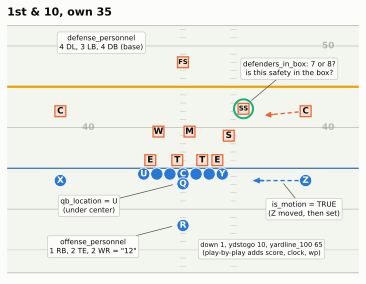
| File (nflreadpy loader) | What it adds to a snap | Seasons | When it arrives |
|---|---|---|---|
Play-by-play (load_pbp) |
Down, distance, field position, score, clock, result, EPA, win probability, nflverse’s xpass and pass_oe |
1999 on (xpass from 2006) |
During the season, within hours of each game |
Participation (load_participation) |
Personnel on both sides, box count, number of pass rushers, coverage label and man/zone | 2016 on; coverage 2018 on | After the season ends (2023 on) |
FTN charting (load_ftn_charting) |
Quarterback alignment, motion, play-action, no-huddle, RPO, screen, blitzers and rushers, the starting hash, and more | 2022 on | During the season, as FTN charts each game |
The last column matters more than it looks. As this chapter is written, in October 2026, the 2026 play-by-play and FTN files are filling in week by week, but 2026 personnel and coverage labels won’t exist until after the season.2 A scouting report on a 2026 opponent has to borrow those from 2025, or chart them yourself.
Why a raw pass rate lies
Start with the number everyone quotes. Figure 70.2 plots each 2025 offense’s share of dropbacks across all its snaps against how well its games were going: the average win probability on its snaps (the model’s chance that the team with the ball wins from there; Win Probability and Decision Analysis builds it).
RAW = plays.groupby(["season", "posteam"]).agg(
raw=("pass", "mean"), wp=("wp", "mean"), epa_all=("epa", "mean"), xp_all=("xpass", "mean"),
trail=("score_differential", lambda s: (s < 0).mean()))
RAW25 = RAW.loc[2025]
R_RAW_WP = RAW25.raw.corr(RAW25.wp)
# the opening paragraph quotes these
assert round(100 * RAW25.loc["LA", "raw"]) == 59 and round(100 * RAW25.loc["NYJ", "raw"]) == 61
assert 0.72 < RAW25.loc["NYJ", "trail"] < 0.78
# quoted in the film room and the takeaways
assert RAW25.xp_all.idxmax() == "NYJ" and RAW25.xp_all.idxmin() == "LA"
assert round(100 * RAW25.loc["NYJ", "xp_all"]) == 70 and round(100 * RAW25.loc["LA", "xp_all"]) == 56
fig, ax = plt.subplots(figsize=(6.4, 3.7))
x, y = RAW25.wp * 100, RAW25.raw * 100
b = np.polyfit(x, y, 1)
xs = np.linspace(x.min() - 1, x.max() + 1, 20)
ax.plot(xs, np.polyval(b, xs), color=style.BASELINE, lw=1.3, zorder=1)
ax.scatter(x, y, s=22, color=style.MUTED, alpha=0.75, zorder=2)
for tm, col, txt, dx, dy, ha in [("NYJ", style.SERIES[1], "Jets", 7, 2, "left"),
("LA", style.SERIES[0], "Rams", -7, 6, "right")]:
ax.scatter(x[tm], y[tm], s=60, color=col, zorder=3, edgecolor=style.SURFACE, lw=0.8)
ax.annotate(txt, (x[tm], y[tm]), xytext=(dx, dy), textcoords="offset points", ha=ha,
fontsize=8.5, fontweight="bold", color=style.INK)
ax.set_xlabel("Average win probability on the team's snaps (%)")
ax.set_ylabel("Dropbacks, all snaps (%)")
ax.set_title("2025: the more a team trailed, the more it passed")
plt.show()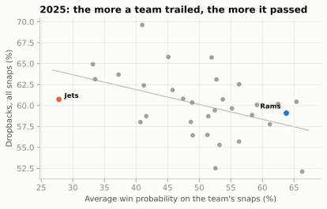
The correlation is -0.45. Square it and win probability alone accounts for about 21% of the differences between teams’ pass rates (the share of the spread a straight line explains). That sounds small, but it is one number standing in for a whole situation, and the mechanism behind it is not about play-callers’ tastes. It is clock arithmetic. A team down 14 in the fourth quarter must pass, because incompletions stop the clock and passes gain yards faster; a team up 14 runs, because every run keeps the clock moving and makes the other team’s comeback harder. Add the downs (third-and-8 is a passing down for everybody) and the two-minute drills, and a big share of a raw pass rate is decided before the play-caller opens his call sheet: once this chapter has a model of the situation, the Jets and Rams film room puts a number on it. So when a broadcast says a team “is one of the most pass-happy offenses in the league,” the first question is: or was it behind a lot?
CautionCommon misconception
“They threw it 650 times, so they’re a passing team.” Volume and rate both follow the scoreboard as much as the play-caller. Bad teams throw a lot because they trail; good teams run a lot late because they lead. Before you call an offense pass-first or run-first, take the scoreboard and the clock out. The rest of this chapter shows two ways to do it: a filter and a model.
Neutral situations: taking the scoreboard out
The filter first. A neutral situation is a snap on which neither the scoreboard nor the clock forces the call. This chapter uses the definition that the play-calling chapters (Early Downs and Field Zones, 08-02 and 08-03) use: win probability between 20% and 80%, and more than two minutes left in the half. For play-calling tendencies, it usually adds first and second down only. Each piece has a reason:
- Win probability 20–80%. Inside that band the game is still in doubt, so a coach is not forced to throw (trailing badly) or to run out the clock (leading comfortably). Win probability is better than a score margin, because it knows that down 10 in the first quarter is a close game and down 10 with four minutes left is not.
- Outside the last two minutes of each half. The two-minute drill is its own sport: hurry-up passing, spiked balls, sideline routes. Every team plays it the same way.
- First and second down. Third down is ruled by the distance: almost everyone throws on third-and-8 and almost everyone runs on third-and-1. Early downs are where play-callers differ.
The first two filters are the garbage-time filter of 13-01 and 13-02 with a tighter band (they keep win probability 10–90%). How much do the exact cut-offs matter? Public analysts use several, so test it: rank every 2025 offense by its early-down pass rate under four definitions and see how far the rankings move.
s25 = plays[plays.season == 2025]
DEFS = {
"Course: WP 20-80%, >2:00 left in half, downs 1-2": s25.early_neutral,
"WP 10-90% instead": s25.wp.between(0.1, 0.9) & (s25.half_seconds_remaining > 120) & (s25.down <= 2),
"Score within 7, first three quarters, downs 1-2": (s25.score_differential.abs() <= 7) & (s25.qtr <= 3)
& (s25.down <= 2),
"WP 20-80% and >2:00 left, all downs": s25.neutral,
}
rates = pd.DataFrame({k: s25[m].groupby("posteam")["pass"].mean() for k, m in DEFS.items()})
ranks = rates.rank()
course = list(DEFS)[0]
display(md_table(pd.DataFrame({
"Neutral definition": list(DEFS),
"Snaps kept": [m.mean() * 100 for m in DEFS.values()],
"Rank correlation with the course's": [ranks[course].corr(ranks[k]) for k in DEFS],
}).round({"Snaps kept": 0})))
NEUTRAL_SHARE = s25.neutral.mean()
EARLY_SHARE = s25.early_neutral.mean()
RANK_R_SCORE = ranks[course].corr(ranks[list(DEFS)[2]])
assert min(ranks[course].corr(ranks[k]) for k in DEFS) >= 0.9| Neutral definition | Snaps kept | Rank correlation with the course’s |
|---|---|---|
| Course: WP 20-80%, >2:00 left in half, downs 1-2 | 43 | 1.00 |
| WP 10-90% instead | 53 | 0.96 |
| Score within 7, first three quarters, downs 1-2 | 40 | 0.92 |
| WP 20-80% and >2:00 left, all downs | 56 | 0.97 |
The course’s filter keeps 43% of all 2025 scrimmage snaps (and 56% if third and fourth downs stay in). The rankings barely care which reasonable version you use: the rank correlations (the ordinary correlation, computed on the teams’ positions in the two rankings instead of their values; statisticians call it Spearman’s) are 0.9 or higher (a “score within 7” filter gives 0.92). That’s reassuring, and it is also a warning. The filter is crude. It still mixes second-and-2 with second-and-15, the opponent’s 5-yard line with your own 20, and a 7-point lead with a 7-point deficit. A team whose early downs happened to be second-and-long more often will look pass-happy in a neutral pass rate for reasons that have nothing to do with its coach. Fixing that needs a model.
Expected pass rate: the league-average play-caller
Here is the idea. For every snap, ask: in exactly this situation, how often would an average NFL offense drop back to pass? That probability is the snap’s expected pass rate, or xpass. It is to play-calling what expected points are to scoring in 13-02: a baseline that prices the situation, so that what is left over belongs to the team. Third-and-12 is close to a certain dropback; second-and-1 at midfield in a tied game leans hard toward a run; first-and-10 down 17 in the fourth quarter leans hard toward a pass.
nflverse ships an xpass for every snap since 2006 (the first season in which the play-by-play marks scrambles), from a gradient-boosted tree model (the XGBoost library) that Ben Baldwin added to the open-source nflfastR project in 2020.3 You can use it directly, and the rest of this chapter mostly does. But it is worth fitting a small one yourself, for the same reason 13-02 fitted its own expected-points model: once you have built it, you know what it can and cannot see. A logistic regression is enough: a model that turns a weighted sum of situation features into a probability between 0 and 1, fitted by pushing down the log loss (the average of −log of the probability the model gave to what actually happened).
The features, and why each is there:
- Down, and distance by down. Distance enters on a log scale, separately for each down, because 1 versus 3 yards to go matters more than 11 versus 13, and because third-and-6 is a passing down while first-and-6 is not.
- Field position, with knots. Like 13-02’s EP model, the yard line gets extra “how far past this point” terms near both goal lines (the 10, the 20, your own 20 and 10), so the curve can bend where play-calling changes: tight red-zone windows, and backed-up offenses that run to get breathing room.
- Score, scaled by how much of the game has gone. A 10-point deficit is a mild nudge toward passing in the first quarter and an order in the fourth. So the score enters on its own and multiplied by the share of the game played, once in a straight line and once raised to the fourth power. The fourth power stays near zero for most of the game (a game half over gives 0.5⁴ ≈ 0.06) and then climbs steeply to 1, so that term lets the score bite hardest at the end. Deficits get their own copies of these terms (
behind, the margin when negative, else zero), because trailing and leading are not mirror images: leading teams run, but trailing teams pass harder. - The end of each half. Inside two minutes of the first half offenses throw on about four snaps in five; inside two minutes of the second, the trailing team throws and the leading team kneels or runs.
def xp_features(s, situation_only=False):
"""Situation -> features for an expected-pass model."""
dn = s["down"].to_numpy()
yl = s["yardline_100"].to_numpy() / 100
ytg = np.log(np.clip(s["ydstogo"].to_numpy(), 1, None))
cols = [np.ones_like(yl)]
cols += [(dn == k).astype(float) for k in (2, 3, 4)] # down
cols += [ytg * (dn == k) for k in (1, 2, 3, 4)] # distance, by down
cols += [yl] + [np.clip(yl - k, 0, None) for k in (0.1, 0.2, 0.8, 0.9)] # field position
if not situation_only:
sd = np.clip(s["score_differential"].to_numpy(), -24, 24) / 10 # score, in tens
gone = 1 - s["game_seconds_remaining"].to_numpy() / 3600 # share of game played
late = (s["half_seconds_remaining"].to_numpy() <= 120).astype(float)
first_half = (s["qtr"].to_numpy() <= 2).astype(float)
behind = np.minimum(sd, 0)
cols += [sd, sd * gone, behind * gone, sd * gone**4, behind * gone**4]
cols += [late * first_half, late * (1 - first_half) * (sd < 0), late * (1 - first_half) * (sd > 0)]
return np.column_stack(cols).astype(np.float32)
def sigmoid(z):
return 1 / (1 + np.exp(-z))
def fit_logistic(X, y, steps=600, lr=0.05):
"""Logistic regression by gradient descent on the log loss (Adam step sizes, as in 13-02).
Returns a function that maps a feature matrix to probabilities."""
mu, sd = X.mean(0), X.std(0)
mu[0], sd[0] = 0, 1 # leave the intercept alone
Xs = (X - mu) / sd
w = np.zeros(X.shape[1], dtype=np.float32)
m, v = np.zeros_like(w), np.zeros_like(w)
for i in range(1, steps + 1):
g = Xs.T @ (sigmoid(Xs @ w) - y) / len(y)
m, v = 0.9 * m + 0.1 * g, 0.999 * v + 0.001 * g**2
w -= lr * (m / (1 - 0.9**i)) / (np.sqrt(v / (1 - 0.999**i)) + 1e-8)
return lambda Z: sigmoid(((Z - mu) / sd) @ w)
train, test = plays[plays.season <= 2024], plays[plays.season == 2025]
y_train = train["pass"].to_numpy(np.float32)
y_test = test["pass"].to_numpy()
situation_only = fit_logistic(xp_features(train, True), y_train)
xpass_model = fit_logistic(xp_features(train), y_train)
def log_loss(p, y):
p = np.clip(p, 1e-6, 1 - 1e-6)
return -np.mean(y * np.log(p) + (1 - y) * np.log(1 - p))
def auc(p, y):
"""Chance that a random dropback gets a higher xpass than a random designed run."""
rank = pd.Series(p).rank().to_numpy() # tied predictions share a rank
n1 = y.sum()
return (rank[y == 1].sum() - n1 * (n1 + 1) / 2) / (n1 * (len(y) - n1))
has_nflverse = test.xpass.notna().to_numpy()
CANDIDATES = {
"League pass rate for every snap": np.full(len(test), y_train.mean()),
"Down, distance and field position only": situation_only(xp_features(test, True)),
"Plus score and clock (this chapter's model)": xpass_model(xp_features(test)),
"nflverse xpass (XGBoost)": test.xpass.to_numpy(),
}
display(md_table(pd.DataFrame(
[(k, log_loss(p[has_nflverse], y_test[has_nflverse]), auc(p[has_nflverse], y_test[has_nflverse]))
for k, p in CANDIDATES.items()], columns=["Model (fitted 2016-2024, scored on 2025)", "Log loss", "AUC"]),
digits=3))
plays["xpass_ours"] = xpass_model(xp_features(plays))
plays["proe_ours"] = 100 * (plays["pass"] - plays.xpass_ours)
late_q2 = plays[(plays.qtr == 2) & (plays.half_seconds_remaining <= 120)]
assert 0.77 < late_q2["pass"].mean() < 0.85 # "about four snaps in five", quoted above| Model (fitted 2016-2024, scored on 2025) | Log loss | AUC |
|---|---|---|
| League pass rate for every snap | 0.673 | 0.500 |
| Down, distance and field position only | 0.595 | 0.720 |
| Plus score and clock (this chapter’s model) | 0.562 | 0.769 |
| nflverse xpass (XGBoost) | 0.536 | 0.786 |
Read the table from the top. Guessing the league’s pass rate for every snap is the floor. Down, distance and field position alone recover much of the signal. Adding score and clock gets most of the rest: the model ranks a random 2025 dropback above a random 2025 run about three times in four (the AUC, short for “area under the curve”, is exactly that chance; 0.5 is a coin flip, 1.0 perfect). nflverse’s model is better still, because it has more features and a more flexible shape, but ours is close, and it was scored on a season it never saw.
def situation(down, ydstogo, yardline_100, score_differential, game_seconds_remaining, qtr):
n = np.broadcast(down, ydstogo, yardline_100, score_differential, game_seconds_remaining).shape or (1,)
half = np.where(np.asarray(qtr) <= 2, np.asarray(game_seconds_remaining) - 1800,
np.asarray(game_seconds_remaining))
return pd.DataFrame({k: np.broadcast_to(np.asarray(v, dtype=float), n) for k, v in dict(
down=down, ydstogo=ydstogo, yardline_100=yardline_100, score_differential=score_differential,
game_seconds_remaining=game_seconds_remaining, half_seconds_remaining=half, qtr=qtr).items()})
fig, (a1, a2) = plt.subplots(1, 2, figsize=(6.6, 3.3), sharey=True)
score = np.arange(-21, 22)
MOMENTS = [("Opening kickoff", 3600, 1), ("Start of 3rd quarter", 1800, 3),
("8:00 left", 480, 4), ("3:00 left", 180, 4)]
for k, (lab, secs, q) in enumerate(MOMENTS):
a1.plot(score, 100 * xpass_model(xp_features(situation(1, 10, 75, score, secs, q))),
color=style.SEQUENTIAL_BLUE[[2, 3, 5, 6][k]], lw=2, label=lab)
a1.axvline(0, color=style.BASELINE, lw=1)
a1.set_xlabel("Offense's score margin")
a1.set_ylabel("Expected pass rate (%)")
a1.set_title("1st & 10, own 25", fontsize=9.5)
a1.set_ylim(0, 100)
a1.legend(fontsize=7, loc="upper right", handlelength=1.2)
togo = np.arange(1, 16)
for k, dn in enumerate([1, 2, 3]):
p = 100 * xpass_model(xp_features(situation(dn, togo, 50, 0, 2400, 2)))
a2.plot(togo, p, color=style.SERIES[k], lw=2)
a2.text(togo[-1] + 0.3, p[-1], ["1st", "2nd", "3rd"][k] + " down", fontsize=7.5,
color=style.INK, va="center")
a2.set_xlim(1, 19.5)
a2.set_xticks([1, 5, 10, 15])
a2.set_xlabel("Yards to go")
a2.set_title("Tied, 2nd quarter, midfield", fontsize=9.5)
fig.tight_layout(w_pad=1.0)
plt.show()
XP_DOWN17 = xpass_model(xp_features(situation(1, 10, 75, -17, 300, 4)))[0]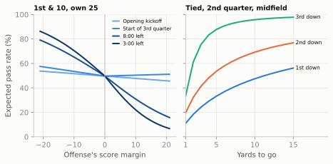
ImportantWhy it exists
A team’s pass rate is the sum of two things: the situations it faced and what it chose to do in them. Coaches have always known this, which is why tendency reports are filed by down, distance and field zone (Game Planning Week). xpass does the same job in one number. It prices every snap’s situation, so a team’s average xpass is the pass rate an average play-caller would have produced from its schedule of situations. The trade: xpass knows only what you give it. Ours ignores the betting line, the stadium, injuries and the opponent; nflverse’s adds the betting line (through a win probability that starts from the pre-game point spread, so the favourite is already more likely to win before the first snap), timeouts, home field and roof type, but still sees no personnel, no quarterback and no opposing defense. That is deliberate, since those are the things you want to show up in the leftover, but it means the leftover holds roster and opponent as well as the play-caller’s taste.
PROE: the choice, measured
Now subtract. For each snap, take what happened (1 for a dropback, 0 for a run) minus its xpass. Average that over a team’s snaps and multiply by 100, and you have pass rate over expected, or PROE, in percentage points:
\[ \text{PROE} = \frac{100}{n}\sum_{i=1}^{n}\left(\text{pass}_i - \text{xpass}_i\right) = 100\,(\text{actual pass rate} - \text{average xpass}) \]
A PROE of +5 means the team dropped back five points more often than an average play-caller would have in the same situations; −10 means it ran ten points more often. nflverse stores the per-snap version as pass_oe, already multiplied by 100.
Why still use the neutral filter, when xpass already prices the situation? Because PROE is meant to measure choice, and outside neutral snaps there is little choice to measure. Down 17 with five minutes left, xpass is about 0.79 and nearly every team passes; averaging in hundreds of snaps like that adds noise and almost no information. The model is also least trustworthy in those corners, where it has the fewest examples. So the convention, used here and, with small variations in the cut-offs, by most public analysts, is PROE on neutral first and second downs.
EN = plays[plays.early_neutral]
TEAM = EN.groupby(["season", "posteam"]).agg(
snaps=("pass", "size"), pass_rate=("pass", "mean"), xpass=("xpass", "mean"),
proe=("pass_oe", "mean"), proe_ours=("proe_ours", "mean"))
TEAM["epa"] = plays[plays.neutral].groupby(["season", "posteam"]).epa.mean() # EPA/play, neutral
TEAM = TEAM.join(RAW)
T25 = TEAM.loc[2025].copy()
T25["raw_rank"] = T25.raw.rank(ascending=False).astype(int)
T25["proe_rank"] = T25.proe.rank(ascending=False).astype(int)
R_OURS = TEAM.proe.corr(TEAM.proe_ours)
SD_OE = EN.pass_oe.std() # how much one snap's "pass minus xpass" swings
show = pd.concat([T25.nlargest(5, "proe"), T25.nsmallest(5, "proe").iloc[::-1]])
display(md_table(pd.DataFrame({
"Team": show.index,
"Raw pass %": show.raw * 100, "Raw rank": show.raw_rank,
"Neutral pass %": show.pass_rate * 100, "xpass %": show.xpass * 100,
"PROE": show.proe, "PROE (ours)": show.proe_ours}), digits=1))| Team | Raw pass % | Raw rank | Neutral pass % | xpass % | PROE | PROE (ours) |
|---|---|---|---|---|---|---|
| ARI | 69.6 | 1 | 60.9 | 52.9 | 8.0 | 7.9 |
| LA | 59.1 | 20 | 58.0 | 52.2 | 5.9 | 7.2 |
| CIN | 65.8 | 2 | 58.4 | 53.5 | 4.9 | 5.1 |
| KC | 65.7 | 3 | 58.4 | 53.6 | 4.7 | 6.2 |
| JAX | 60.2 | 16 | 55.6 | 51.4 | 4.2 | 4.3 |
| DET | 59.4 | 19 | 49.2 | 54.6 | -5.4 | -3.3 |
| GB | 55.7 | 29 | 48.2 | 53.9 | -5.7 | -4.3 |
| ATL | 56.5 | 27 | 48.3 | 54.2 | -5.9 | -4.9 |
| BAL | 52.5 | 31 | 42.9 | 54.1 | -11.2 | -9.9 |
| NYJ | 60.7 | 13 | 40.8 | 53.0 | -12.2 | -13.2 |
Raw pass % and raw rank use all of a team’s snaps; the other columns use neutral first and second downs. Rank 1 = most dropbacks.
The table shows the five most pass-leaning and five most run-leaning offenses of 2025 on neutral early downs, from the top. The two PROE columns agree closely: across all 320 team-seasons from 2016 to 2025, our model’s PROE and nflverse’s correlate at 0.98, so the small model is good enough for this job. The interesting column is the raw rank beside them. The Rams, second in PROE, were 20th in raw pass rate; the Jets, last in PROE, were 13th.
LEAGUE = EN.groupby("season").agg(pass_rate=("pass", "mean"), xpass=("xpass", "mean"))
LEAGUE["proe"] = TEAM.groupby(level="season").proe.mean() # the average team, as on the dashboard
print(LEAGUE.round(3).T.to_string())
assert LEAGUE.proe.max() < 0.5 and LEAGUE.proe.min() > -3 and (LEAGUE.xpass > LEAGUE.pass_rate).sum() >= 9
assert LEAGUE.pass_rate.between(0.49, 0.54).all()
SHAPE = snaps[snaps.early_neutral & (snaps.season >= 2023)].groupby("season")[["heavy", "uc"]].mean()
assert SHAPE.loc[2025, "heavy"] > SHAPE.loc[2024, "heavy"] + 0.04 and SHAPE.loc[2025, "uc"] > SHAPE.loc[2024, "uc"] + 0.04season 2016 2017 2018 2019 2020 2021 2022 2023 2024 2025
pass_rate 0.519 0.501 0.525 0.524 0.529 0.520 0.512 0.524 0.514 0.518
xpass 0.520 0.524 0.531 0.533 0.526 0.529 0.534 0.532 0.532 0.531
proe -0.308 -2.366 -0.482 -0.907 0.183 -1.090 -2.302 -0.807 -1.908 -1.458One thing in that output may surprise you: the average team’s PROE is not zero. It was -1.5 in 2025 and has sat between -2.4 and +0.2 in every season since 2016. The reason is the model, not the league. nflverse fits xpass on every snap, all downs and scores; on the neutral early-down slice it expects a little more passing (about 53%) than actually happens (about 52%), every year. So read a team’s PROE against the league’s line, not against zero: a team at -1.5 in 2025 was exactly average. The same output answers a question you may have: is the NFL running more? Not on these snaps. The league’s neutral early-down pass rate stayed between 50% and 53% in every season from 2016 to 2025. What changed in 2025 was how offenses lined up: on these snaps, heavy personnel rose from 18% in 2024 to 24%, and snaps under center from 38% to 44%, while the pass rate hardly moved.
NoteFilm room: New York Jets and Los Angeles Rams 2025
Put the opening’s two offenses through the whole pipeline. Across all their snaps, the Jets passed on 61% and the Rams on 59%. The situations alone explain much of that. Average nflverse’s xpass over every snap each team played, and the Jets’ schedule of situations called for a pass on 70% of their snaps, the highest expected rate in the league, and the Rams’ on 56%, the lowest. Filter to neutral early downs and the Jets fall to 41% while the Rams barely move (58%). Price the situations and the gap widens: the Jets’ PROE was -12.2, the lowest in the league, and the Rams’ +5.9, second only to Arizona.
What to notice: the two raw rates were almost equal for opposite reasons. The Jets spent the season behind (average win probability on their snaps 28%), so the clock made them throw; when they had a choice, they ran. The Rams spent it ahead (64%), so the clock made them run late; when they had a choice, they put the ball in their MVP quarterback’s hands. Neither raw number told you anything about either coaching staff. PROE did.
What PROE counts: the play that was run, not the play that was called
So far this chapter has called PROE “the play-caller’s choice”. That is a useful shorthand, and it is not exactly true. PROE scores what the play-by-play recorded, and several ordinary football mechanisms sit between the call sheet and the record.
en25_all = snaps[(snaps.season == 2025) & snaps.early_neutral]
RPO_SHARE = en25_all.is_rpo.mean()
RPO_AS_PASS = en25_all[en25_all.is_rpo == 1]["pass"].mean()
RPO_TEAM = en25_all.groupby("posteam").is_rpo.mean().sort_values(ascending=False)
SCREEN_TEAM = en25_all[en25_all["pass"] == 1].groupby("posteam").is_screen_pass.mean()
ALIGN_PASS = en25_all.groupby("qb_location")["pass"].mean() # league pass rate: U, S (shotgun), P (pistol)
print(f"RPOs: {RPO_SHARE:.1%} of 2025 neutral early downs; {RPO_AS_PASS:.0%} of them ended as dropbacks")
print("Most RPOs:", ", ".join(f"{t} {v:.0%}" for t, v in RPO_TEAM.head(5).items()))
print(f"Screens: {en25_all[en25_all['pass'] == 1].is_screen_pass.mean():.0%} of dropbacks; "
f"most: {SCREEN_TEAM.idxmax()} {SCREEN_TEAM.max():.0%}")
assert RPO_TEAM.index[0] == "KC" and "NYJ" in RPO_TEAM.head(5).index and SCREEN_TEAM.idxmax() == "PIT"RPOs: 7.6% of 2025 neutral early downs; 23% of them ended as dropbacks
Most RPOs: KC 18%, NYG 16%, TEN 15%, CIN 13%, NYJ 13%
Screens: 10% of dropbacks; most: PIT 18%- RPOs. On a run-pass option the line blocks a run and the quarterback decides, at or just after the snap, whether to hand off or throw. The call is “RPO”; the record is whichever happened. RPOs were 7.6% of 2025’s neutral early downs league-wide, and about three in four of them (77%) went into the books as runs. Kansas City used the most (18%), and the Jets, the league’s lowest PROE, were among the top five (13%): part of their “running” was a quarterback’s read, not a coordinator’s call.
- Checks at the line. In a check-with-me or kill call system the quarterback picks between a run and a pass after seeing the defense, so a team whose quarterback has that freedom will show the quarterback’s choices in its PROE as well as the coordinator’s.
- Screens count as dropbacks, although many offenses use them as an extension of the run game. Pittsburgh threw screens on 18% of its neutral early-down dropbacks, the most in the league.
- Scrambles count as dropbacks (a scramble began as a pass call; that is why nflverse counts it so), and designed quarterback runs count as runs.
None of this breaks PROE. It means PROE measures an offense’s run/pass mix against the situation, with the play-caller as the biggest single influence but not the only one.
PROE by situation
A season PROE is an average over very different moments. Splitting it is where a scouting report starts: on which downs, scores and parts of the field does this team break from the league? The recipe is the same subtraction on a subset of snaps, and Figure 70.4 applies it to two teams near opposite ends of the 2025 table: the Rams, second from the top, and the Ravens, second from the bottom.
SITS = {
"1st & 10": lambda d: (d.down == 1) & (d.ydstogo == 10),
"2nd & 1-6": lambda d: (d.down == 2) & (d.ydstogo <= 6),
"2nd & 7+": lambda d: (d.down == 2) & (d.ydstogo >= 7),
"3rd & 1-3": lambda d: (d.down == 3) & (d.ydstogo <= 3),
"3rd & 4+": lambda d: (d.down == 3) & (d.ydstogo >= 4),
"Leading": lambda d: d.score_differential > 0,
"Tied": lambda d: d.score_differential == 0,
"Trailing": lambda d: d.score_differential < 0,
"Red zone": lambda d: d.yardline_100 <= 20,
}
def proe_by_situation(team, season):
d = plays[plays.neutral & (plays.season == season) & (plays.posteam == team) & plays.pass_oe.notna()]
rows = []
for name, rule in SITS.items():
x = d[rule(d)].pass_oe
rows.append((name, x.mean(), x.std() / np.sqrt(len(x)), len(x)))
return pd.DataFrame(rows, columns=["situation", "proe", "se", "n"]).set_index("situation")
PS = {tm: proe_by_situation(tm, 2025) for tm in ["LA", "BAL"]}
fig, ax = plt.subplots(figsize=(6.4, 3.9))
yy = np.arange(len(SITS))[::-1]
for k, (tm, lab) in enumerate([("LA", "Rams"), ("BAL", "Ravens")]):
t = PS[tm]
off_y = yy + (0.17 if k == 0 else -0.17)
col = style.SERIES[0] if k == 0 else style.SERIES[1]
ax.hlines(off_y, t.proe - t.se, t.proe + t.se, color=col, lw=1.4, alpha=0.6)
ax.scatter(t.proe, off_y, s=34, color=col, zorder=3, label=lab, edgecolor=style.SURFACE, lw=0.6)
for yv, n in zip(off_y, t.n):
ax.text(33 + 8 * k, yv, f"{n}", fontsize=6.6, color=col, va="center", ha="right")
ax.text(37, yy[0] + 0.62, "snaps (n)", fontsize=6.8, color=style.INK_2, ha="center")
ax.axvline(0, color=style.INK_2, lw=1)
ax.set_yticks(yy, list(SITS), fontsize=8)
ax.set_xlim(-42, 43)
ax.set_ylim(-0.6, len(SITS) - 0.1)
ax.set_xticks([-40, -30, -20, -10, 0, 10, 20])
ax.set_xlabel("Pass rate over expected (percentage points)")
ax.grid(axis="y", visible=False)
ax.legend(loc="lower left", fontsize=8)
ax.set_title("Where the Rams and Ravens left the script, 2025")
plt.show()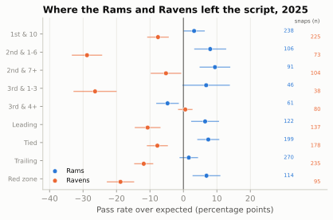
The whiskers are the lesson as much as the dots. A team’s whole-season PROE rests on four or five hundred neutral snaps, but a situation like “third-and-1 to 3” holds forty or so, and one standard error there is about seven points. The general rule: the standard error of a PROE is roughly 48 divided by the square root of the number of snaps, because each snap’s “pass minus xpass” swings by about 48 points (its standard deviation on neutral early downs). That number is no accident: a yes-or-no outcome whose probability is near one half has a standard deviation near one half, which is 50 points once you multiply by 100. A hundred snaps gives about ±4.8 points; twenty-five, about ±10. Read small cells as hints, not findings.
Does passing more pay? PROE versus EPA
13-02 and Early Downs and Field Zones showed that on early downs, league-wide, a dropback earns more EPA than a run. That is the analytics argument for passing more, and PROE is how the argument gets aimed at a single team. Does it show up team by team?
R_ALL = TEAM.proe.corr(TEAM.epa)
PROE_RANK = TEAM.groupby(level="season").proe.rank(ascending=False)
assert all(PROE_RANK.loc[(s, "CIN")] <= 3 for s in (2022, 2023, 2024))
R_BY_SEASON = TEAM.groupby(level="season").apply(lambda t: t.proe.corr(t.epa))
TOP_EPA = T25.epa.rank(ascending=False)
assert TOP_EPA["GB"] == 1 and all(TOP_EPA[t] <= 6 and T25.loc[t, "proe"] < 0 for t in ("GB", "DAL", "BUF"))
fig, ax = plt.subplots(figsize=(6.4, 4.2))
old = TEAM.loc[TEAM.index.get_level_values("season") <= 2024]
ax.scatter(old.proe, old.epa, s=10, color=style.GRID, edgecolor=style.BASELINE, lw=0.3, zorder=1)
ax.scatter(T25.proe, T25.epa, s=26, color=style.SERIES[0], zorder=3, edgecolor=style.SURFACE, lw=0.6)
LABELS = {"LA": (8, 3, "left"), "NE": (8, 0, "left"), "ARI": (8, 0, "left"), "NYJ": (8, 0, "left"),
"BAL": (8, -5, "left"), "CIN": (8, -7, "left"), "KC": (-8, -9, "right"), "BUF": (-7, -9, "right"),
"DET": (-14, 12, "right"), "CAR": (8, -4, "left"), "GB": (-8, 4, "right"), "DAL": (-6, 10, "right")}
for tm, (dx, dy, ha) in LABELS.items():
ax.annotate(tm, (T25.loc[tm, "proe"], T25.loc[tm, "epa"]), xytext=(dx, dy), textcoords="offset points",
ha=ha, va="center", fontsize=7.5, color=style.INK,
arrowprops=dict(arrowstyle="-", color=style.INK_2, lw=0.5, shrinkA=1, shrinkB=3))
ax.axhline(0, color=style.BASELINE, lw=1)
ax.axvline(0, color=style.BASELINE, lw=1)
ax.set_xlabel("PROE, neutral 1st & 2nd down (percentage points)")
ax.set_ylabel("EPA per play, neutral snaps")
ax.set_title("Passing more than expected, and scoring")
plt.show()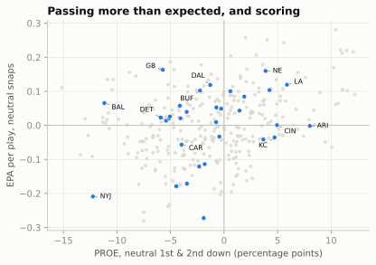
The slope is real but gentle. Across 2016–2025 the correlation is 0.31; in single seasons it has ranged from 0.05 to 0.51 (0.05 in 2024, 0.27 in 2025). And even that gentle slope can’t be read as “pass more and you’ll score more,” because the arrow runs both ways:
- Good passers earn the right to pass. A team with an elite quarterback throws more because throwing works for it. The 2022–2024 Bengals were among the league’s three most pass-leaning offenses every season, built around Joe Burrow; that PROE is partly a description of their roster.
- Struggling passers get hidden. A coach with a poor or injured quarterback, or a bad pass protection, runs more on purpose. Low PROE and low EPA then share a cause.
- The league-wide edge is an average. Dropbacks beat runs on early downs on average, but a team’s runs can be better than average (an elite line and back) and its passes worse. In 2025 the most efficient offense on neutral snaps, Green Bay, had a PROE of -5.7, and Dallas and Buffalo, also in the top six, were slightly below zero.
So treat PROE as what it is: a description of style, measured cleanly. It tells a defense what to expect. It doesn’t grade the coach.
NoteFilm room: Philadelphia Eagles 2024
The 2024 Eagles are the cleanest counter-example to “pass more.” On neutral early downs their PROE was -8.2, 2nd-lowest in the league, after two seasons near +5 (+4.9 in 2022, +4.4 in 2023). The change had two names: Saquon Barkley, who ran for 2,005 yards behind one of the league’s best offensive lines, and a new play-caller, offensive coordinator Kellen Moore. Philadelphia’s offense was 4th in neutral EPA per play, and the season ended with a 40–22 win over Kansas City in Super Bowl LIX.4
What to notice: PROE moved by about thirteen points in one year with the same head coach and quarterback, because a new back and a new play-caller changed what was worth doing. And the Eagles’ 2025 PROE, under yet another coordinator (Kevin Patullo), came back toward zero (-0.3). A team’s PROE is an answer to its own personnel and play-caller, not a fixed belief.
CautionCommon misconception
“Negative PROE means an old-fashioned, analytically backward coach.” Sometimes. But PROE also falls when a team has a dominant running game, a hurt quarterback, a lead it is protecting within the neutral band, or a quarterback whose RPO reads keep handing the ball off. Read PROE as “what to expect,” then look for the reason before you judge it.
How long does a tendency last?
A tendency is only useful to an opponent if it persists: from the games already played to the next one, and from last season into this one. PROE turns out to be steadier than efficiency on both counts, though “steadier” is not the same as “fixed”.
n_ = EN.copy()
n_["game_no"] = n_.groupby(["season", "posteam"]).week.rank(method="dense")
CARRY = []
for k in range(1, 9):
first = n_[n_.game_no <= k].groupby(["season", "posteam"])[["pass_oe", "epa"]].mean()
rest = n_[n_.game_no > k].groupby(["season", "posteam"])[["pass_oe", "epa"]].mean()
CARRY.append((k, first.pass_oe.corr(rest.pass_oe), first.epa.corr(rest.epa)))
CARRY = pd.DataFrame(CARRY, columns=["k", "proe", "epa"]).set_index("k")
# Head coach of record: the coach in charge for most of each team's regular-season games.
OLD_ABBR = {"OAK": "LV", "SD": "LAC", "STL": "LA"}
sch = nfl().load_schedules(list(SEASONS)).to_pandas()
sch = sch[sch.game_type == "REG"]
hc = pd.concat([sch[["season", t, f"{side}_coach"]].set_axis(["season", "team", "coach"], axis=1)
for side, t in (("home", "home_team"), ("away", "away_team"))])
hc["team"] = hc.team.replace(OLD_ABBR)
HC = hc.groupby(["season", "team"]).coach.agg(lambda s: s.value_counts().index[0])
yoy = TEAM[["proe", "epa"]].reset_index().rename(columns={"posteam": "team"})
yoy["team"] = yoy.team.replace(OLD_ABBR)
yoy = yoy.merge(yoy.assign(season=yoy.season + 1), on=["season", "team"], suffixes=("", "_prev"))
yoy["same_hc"] = [HC.get((s, t)) == HC.get((s - 1, t)) for s, t in zip(yoy.season, yoy.team)]
R_YOY = {same: (g.proe.corr(g.proe_prev), g.epa.corr(g.epa_prev), len(g)) for same, g in yoy.groupby("same_hc")}
assert PROE_RANK.loc[(2023, "ARI")] >= 27 and PROE_RANK.loc[(2025, "ARI")] <= 3 # quoted in the text
fig, (a1, a2) = plt.subplots(1, 2, figsize=(6.6, 3.2), gridspec_kw={"width_ratios": [1, 1.1]})
a1.plot(CARRY.index, CARRY.proe, color=style.SERIES[0], marker="o", ms=3.5, lw=2)
a1.plot(CARRY.index, CARRY.epa, color=style.MUTED, marker="o", ms=3.5, lw=2)
a1.text(8.15, CARRY.proe.iloc[-1], "PROE", fontsize=7.5, color=style.SERIES[0], va="center")
a1.text(8.15, CARRY.epa.iloc[-1], "EPA/play", fontsize=7.5, color=style.INK_2, va="center")
a1.set_xlim(0.7, 10.2)
a1.set_ylim(0, 0.65)
a1.set_xticks(range(1, 9))
a1.set_xlabel("Games played so far (k)")
a1.set_ylabel("Correlation with rest of season")
a1.set_title("Within a season", fontsize=9.5)
for same, col, lab in [(True, style.SERIES[0], "same head coach"), (False, style.SERIES[1], "new head coach")]:
g = yoy[yoy.same_hc == same]
a2.scatter(g.proe_prev, g.proe, s=10 if same else 16, color=col, alpha=0.55 if same else 0.9,
edgecolor="none", label=f"{lab} (r = {R_YOY[same][0]:.2f})")
a2.axhline(0, color=style.BASELINE, lw=0.8)
a2.axvline(0, color=style.BASELINE, lw=0.8)
a2.set_xlabel("PROE, previous season")
a2.set_ylabel("PROE, this season")
a2.set_title("Season to season", fontsize=9.5)
a2.legend(fontsize=7, loc="upper center", bbox_to_anchor=(0.45, -0.22), ncol=1, handletextpad=0.2)
fig.tight_layout(w_pad=1.2)
plt.show()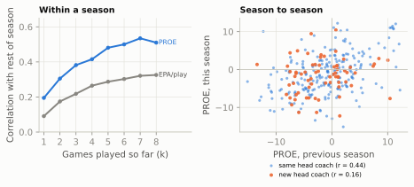
Two practical rules come out of that chart.
Within a season, trust PROE early. After four games, a team’s PROE correlates 0.42 with its PROE over the rest of the season; EPA per play manages only 0.26, and even after eight games EPA (0.33) has not caught up with four games of PROE. The reason is the same one that makes 13-02’s success rate steadier than EPA: a play call is a choice the coach makes every snap, while a play’s result carries the whole randomness of football (a tipped ball, a missed tackle, a fumble). Style shows up faster than quality.
Across seasons, PROE carries over when the coach and the roster both stay. When the head coach stayed, PROE carried over from one season to the next with a correlation of 0.44 (220 team-seasons), against 0.43 for EPA per play in the same pairs. When he changed, PROE’s carry-over fell to 0.16 (68 team-seasons). A correlation of 0.4 is moderate, not iron: it says last year’s PROE is a real hint, and that something else is moving the number too. That something is mostly the roster. Head coach is a rough stand-in for play-caller (some head coaches call the defense or hand the offense to a coordinator), and Game Planning Week followed one play-caller, Drew Petzing, whose Arizona offenses went from among the most run-leaning in 2023 to among the most pass-leaning by 2025. Same man, opposite ends of the league: the season averages followed Arizona’s roster and quarterback situation, as 08-03 concluded. The Eagles film room above shows the same thing from the other side (a new back and a new play-caller moved PROE thirteen points). So the working rule is: a team’s PROE persists when its play-caller and its key personnel persist, and either one changing can reset it. That matters right now. For 2026, Seattle (Brian Fleury), Detroit (Drew Petzing), Kansas City (Eric Bieniemy), Baltimore (Declan Doyle, under new head coach Jesse Minter) and Philadelphia (Sean Mannion) all have new offensive coordinators, among others.5 Their 2025 PROE is a weak guide to their 2026 offense; the first four 2026 games are a better one.
Personnel, alignment, motion and play-action
PROE answers “run or pass, compared with the situation?” A defense preparing for a game wants the next layer down: from what? Constraint Theory and Sequencing built a tendency table for one team, pass rate by personnel and quarterback alignment, and showed that the alignment alone calls about two snaps in three league-wide. Here the same ingredients become league-wide measures, one number per team, so you can see at a glance where an offense differs from the other 31. Each is measured on neutral early downs, and each has a reason a defensive coordinator cares:
- Personnel shares (11, 12, and “heavy”: two or more backs, three or more tight ends, or a sixth offensive lineman). Personnel decides the defense’s own personnel. Heavy groupings pull a defense into its base package or a bigger front, and a team that lives in them dictates matchups (Personnel Groupings).
- Under-center and pistol shares, and the pass rate from under center. The quarterback’s alignment is the loudest run/pass tell in public data, and it has three values, not two. On 2025’s neutral early downs the league passed on 71% of shotgun snaps, 34% from under center and 30% from the pistol (quarterback about four yards back, the back behind him): the pistol is a run look. A team that throws a lot from under center has neutralised the tell (see 08-02).
- RPO rate, from FTN’s
is_rpo: how often the run/pass decision is left to the quarterback’s read (RPOs). - Motion rate, from FTN’s
is_motion. Motion before or at the snap forces the defense to adjust and communicate, and can reveal man or zone (Motion and Shifts). - Play-action rate, as a share of dropbacks. Play-action depends on the defense believing the run, so it pairs with heavy personnel and under-center snaps (Play-Action, Boots and Screens).
- No-huddle rate. Lining up without a huddle limits the defense’s substitutions and its time to disguise (In-Game Adjustments and Tempo).
def offense_metrics(season):
"""One row per offense: neutral early-down tendencies from participation and FTN charting."""
o = snaps[(snaps.season == season) & snaps.early_neutral]
t = o.groupby("posteam").agg(
snaps=("pass", "size"), proe=("pass_oe", "mean"),
p11=("pers", lambda s: (s == "11").mean()), p12=("pers", lambda s: (s == "12").mean()),
heavy=("heavy", "mean"), uc=("uc", "mean"), pistol=("pistol", "mean"), rpo=("is_rpo", "mean"),
motion=("is_motion", "mean"), nohuddle=("is_no_huddle", "mean"))
t["uc_pass"] = o[o.uc == 1].groupby("posteam")["pass"].mean()
t["pa"] = o[o["pass"] == 1].groupby("posteam").is_play_action.mean()
return t
def defense_metrics(season):
"""One row per defense: charted coverage on dropbacks, plus FTN blitzers and rushers."""
c = cov[cov.season == season]
db = snaps[(snaps.season == season) & (snaps.qb_dropback == 1)]
t = c.groupby("defteam").agg(man=("man", "mean"), two_high=("two_high", "mean"), labelled=("man", "size"))
t["c0"] = c.groupby("defteam").defense_coverage_type.apply(lambda s: (s == "COVER_0").mean())
t["blitz"] = db.groupby("defteam").n_blitzers.apply(lambda s: (s.dropna() > 0).mean())
t["rush5"] = db.groupby("defteam").n_pass_rushers.apply(lambda s: (s.dropna() >= 5).mean())
sim = db[db.n_blitzers.notna() & db.n_pass_rushers.notna()] # a blitzer, but only four rushers
t["sim"] = sim.groupby("defteam").apply(lambda g: ((g.n_blitzers > 0) & (g.n_pass_rushers <= 4)).mean())
return t
OFF25, DEF25 = offense_metrics(2025), defense_metrics(2025)
LG_OFF = OFF25.mean() # average team (each team counts once)DASH = [("proe", "PROE", lambda v: f"{v:+.1f}"), ("p11", "11", None), ("p12", "12", None),
("heavy", "Heavy", None), ("uc", "Under\ncenter", None), ("pistol", "Pistol", None),
("uc_pass", "Pass\nfrom UC", None), ("rpo", "RPO", None), ("motion", "Motion", None),
("pa", "Play-\naction", None), ("nohuddle", "No-\nhuddle", None)]
heat_table(OFF25.sort_values("proe", ascending=False), DASH, figsize=(6.5, 8.3),
footnote="PROE in percentage points; every other column is a percentage of neutral early-down "
"snaps (play-action: of dropbacks).")
plt.show()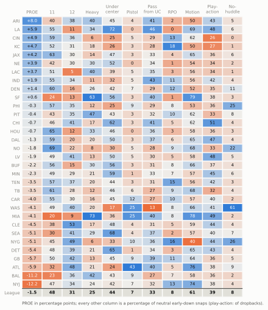
Read the dashboard by columns first, then rows.
- Heavy personnel is the most lopsided column. Miami and San Francisco sat in a fullback, extra-tight-end or extra-lineman package on about two early downs in three or more. Pittsburgh came next (47%), mostly with a sixth offensive lineman, the kind of heavy set a “12 personnel” label would have hidden; then Baltimore, the Chargers and Arizona at about two in five, and the Rams at 34%. The 2025 shift toward heavier sets (Next Gen Stats counted fewer than three wide receivers on 41.7% of plays) shows up here as a handful of deep-blue cells in this column, not as an even drift across the league.6
- Under center is led by the Rams, at 72%, and the Rams also threw from under center far more often than the league (46% against an average team’s 33%). That combination is a self-scouted offense: the look that says “run” for most teams says “coin flip” for them. At the other end, Washington, Atlanta, Cincinnati, Philadelphia and Kansas City were under center least, but read the next column before calling all five pass-first. Atlanta’s missing under-center snaps went to the pistol (43% of its neutral early downs, the most in the league), which is a run look, not a passing one. Cincinnati and Kansas City were the true shotgun offenses, and they used play-action least while ranking among the heaviest RPO users (Kansas City first): their run-pass conflict comes from options, not fakes.
- Motion runs from the Giants (40%, about ten points below the next-lowest offense) to Miami and San Francisco near 80%, two Shanahan-tree offenses.
- No-huddle has one outlier: Washington, at 61% of neutral early downs, a deliberate tempo identity no other team came close to.
Then read a row as a sentence. The Rams’ row says: passes more than expected, in heavy and 11 personnel, mostly from under center, with motion on most snaps and play-action on about half its dropbacks, and rarely in a hurry. That is the start of a scouting report, and the last section of this chapter turns it into one.
NoteGo deeper: why the motion numbers you read disagree
FTN’s is_motion means “motion occurred on the play before or at the time of the snap.” It is not motion at the snap (ESPN’s series: about 4% of plays in 2017, about 22% in 2023), and it is not PFF’s “shift or motion” rate (63.9% in 2025, against FTN’s 55% on all 2025 runs and dropbacks).7 Motion and Shifts lays the three series side by side. For a tendency card the rule is simple: compare teams inside one series, and say which one.
Coverage tendencies from charting data
Offensive tendencies come mostly from things anyone can count: who is on the field, where the quarterback stands, whether somebody moved. Coverage is different. Nobody in the public data knows what the defensive coordinator called. What exists is coverage charting: an analyst watches each pass play after the game and labels the coverage the defense played after the snap (Cover 1, Cover 3, quarters and so on), plus whether it was man or zone. In nflverse these labels sit in the participation file: from the NFL’s Next Gen Stats for 2018–2022 (film charting, and from 2022 a coverage model trained on that charting and fed by tracking data), and from FTN’s charters for 2023 onward.8 They exist only on dropbacks, because coverage is something you can only see when there are routes to cover.
The phrase “after the snap” carries a lot of weight. A defense that shows one picture and plays another (the disguise of Disguise, Rotation and Split-Field) gets the label of what it played. Figure 70.8 is the classic case.
def protect(p, rushers=("SDE", "SDT", "WDT", "WDE")):
"""Five linemen set, four rushers engage them: enough to show it is a pass, no more (as in 06-06)."""
for k in ("LT", "LG", "C", "RG", "RT"):
p.block(k, pts=[(-1.2, 0.0)])
for k in rushers:
p.rush(k, pts=[(-1.6, 0.0)], speed=2.0)
off = offense("gun_2x2")
nick = [p.moved(d=5.0, w=-6.0) if p.key == "WILL" else p # Will walks out over the left slot
for p in defense("nickel", "two_high", off)]
rot = Play(off, nick, los=50, to_go=10, title="Shown two-high, played Cover 3")
rot.route("X", r.go(17)); rot.route("Z", r.go(17)); rot.route("H", r.seam(15)); rot.route("Y", r.curl(10))
rot.route("RB", r.flat(6.0, 5), side=-1)
rot.dropback(2.5)
protect(rot)
rot.drop("FS", (17.0, 0.0), speed=7.0) # rotates to the deep middle
rot.drop("SS", (8.0, 5.0), speed=4.5) # buzzes down to the hook-curl
rot.drop("LCB", (15.0, -14.5)); rot.drop("RCB", (15.0, 14.5)) # bail to the outside thirds
rot.drop("NB", (7.0, 12.5)); rot.drop("MIKE", (7.0, -3.0)); rot.drop("WILL", (6.5, -11.0))
show_with_thirds(rot, times=[-0.5, 0.5, 1.2, 2.1]) # animation on the web; frame strip in printThe labels themselves are the coverage names of Part 6. The man family is Cover 0 (man with no deep safety), Cover 1 (man with one) and 2-Man (man under two deep halves). The zones are Cover 3, Cover 2, quarters and Cover 6 (quarters on one half, Cover 2 on the other). The odd one out is Cover 9, the dialect term of Coverage Fundamentals: a weak-rotation Cover 3 on some staffs, Cover 3 match or a split-field call on others. FTN doesn’t publish its definition, but it tags every COVER_9 snap as zone, and it behaves like a Cover 3 relative, so this chapter shades it with the single-high zones in its charts and, like 06-06, leaves it out of the two-high share.
COV_ORDER = ["COVER_0", "COVER_1", "2_MAN", "COVER_3", "COVER_9", "COVER_2", "COVER_4", "COVER_6"]
COV_NAME = {"COVER_0": "Cover 0", "COVER_1": "Cover 1", "2_MAN": "2-Man", "COVER_3": "Cover 3",
"COVER_9": "Cover 9", "COVER_2": "Cover 2", "COVER_4": "Quarters", "COVER_6": "Cover 6"}
COV_COLOR = {"COVER_0": style.DEFENSE_DARK, "COVER_1": style.DEFENSE, "2_MAN": "#f5a27f",
"COVER_3": style.SEQUENTIAL_BLUE[5], "COVER_9": style.SEQUENTIAL_BLUE[2],
"COVER_2": "#0f7a55", "COVER_4": style.THIRD, "COVER_6": "#a6e3c8"}
def coverage_mix(c):
return c.defense_coverage_type.value_counts(normalize=True).reindex(COV_ORDER).fillna(0)
c25 = cov[cov.season == 2025]
assert set(cov[cov.defense_coverage_type == "COVER_9"].defense_man_zone_type.dropna()) == {"ZONE_COVERAGE"}
LG_MIX25 = coverage_mix(c25)
EARLY_MIX = coverage_mix(c25[c25.down <= 2])
THIRD_MIX = coverage_mix(c25[(c25.down == 3) & c25.ydstogo.between(4, 8)])
display(md_table(pd.DataFrame({
"Coverage (2025 label)": [COV_NAME[k] for k in COV_ORDER],
"All dropbacks %": LG_MIX25.values * 100, "1st & 2nd down %": EARLY_MIX.values * 100,
"3rd & 4-8 %": THIRD_MIX.values * 100}), digits=1))| Coverage (2025 label) | All dropbacks % | 1st & 2nd down % | 3rd & 4-8 % |
|---|---|---|---|
| Cover 0 | 3.8 | 2.8 | 6.2 |
| Cover 1 | 22.5 | 19.7 | 35.4 |
| 2-Man | 4.7 | 3.7 | 7.4 |
| Cover 3 | 27.9 | 30.1 | 18.0 |
| Cover 9 | 2.6 | 2.8 | 1.8 |
| Cover 2 | 23.1 | 24.0 | 21.6 |
| Quarters | 10.1 | 10.9 | 5.9 |
| Cover 6 | 5.4 | 6.1 | 3.8 |
League-wide, 2025’s labelled dropbacks were mostly Cover 3, Cover 2 and Cover 1, with quarters next. The situational split is the first tendency worth knowing: on third-and-4 to 8, man coverage (Cover 1, Cover 0, 2-Man) jumped from about 26% of early-down dropbacks to 49%. Defenses play more man when they know a pass is coming and the sticks are close: man coverage challenges every short route at once (Man Coverage). Figure 70.9 shows the whole league, team by team.
mix = c25.groupby("defteam").defense_coverage_type.value_counts(normalize=True).unstack().reindex(columns=COV_ORDER).fillna(0)
mix = mix.loc[mix[["COVER_0", "COVER_1", "2_MAN"]].sum(1).sort_values().index]
fig, ax = plt.subplots(figsize=(6.4, 7.0))
left = np.zeros(len(mix))
for k in COV_ORDER:
ax.barh(range(len(mix)), mix[k] * 100, left=left, color=COV_COLOR[k], height=0.78,
label=COV_NAME[k], edgecolor=style.SURFACE, lw=0.4)
left += mix[k].values * 100
ax.set_yticks(range(len(mix)), mix.index, fontsize=7)
ax.set_xlim(0, 100)
ax.set_xlabel("Share of charted dropbacks (%)")
ax.grid(axis="y", visible=False)
ax.tick_params(axis="y", length=0)
ax.legend(ncol=4, fontsize=7, loc="lower center", bbox_to_anchor=(0.5, 1.0), handlelength=1.0, columnspacing=1.0)
ax.set_ylim(-0.6, len(mix) - 0.4)
fig.text(0.02, 0.005, "Source: FTN charting via nflverse participation data (load_participation), 2025 regular season.\n"
"Labels exist only on dropbacks; 'blown' and 'combination' tags (fewer than 1 snap in 200) are left out.\n"
"FTN's labels are not comparable with the 2018-2022 Next Gen Stats labels: compare teams within a season.",
fontsize=6.6, color=style.INK_2, va="bottom")
fig.subplots_adjust(bottom=0.13, top=0.93, left=0.09, right=0.98)
plt.show()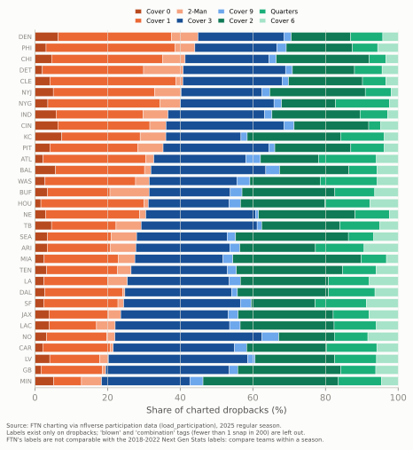
Coverage is half of a defense’s habits; the other half is pressure, and FTN charts it in two columns that answer different questions. n_blitzers counts defenders FTN judged to be blitzing (rushing from a spot where they’d normally cover). n_pass_rushers counts everyone who rushed. Read together they separate three things: a five-man (or bigger) rush is a real numbers advantage up front; a blitzer with only four rushers means somebody else dropped out, the simulated pressure of Zone Blitzes and Simulated Pressure, pressure from an unexpected place without extra rushers; and a four-man rush with no blitzer is a plain rush. Figure 70.10 puts coverage and pressure on one grid, the defensive twin of the offensive dashboard.
DDASH = [("man", "Man", None), ("two_high", "Two-\nhigh", None), ("c0", "Cover 0", None),
("blitz", "1+\nblitzer", None), ("rush5", "5+\nrushers", None), ("sim", "Sim\npressure", None)]
heat_table(DEF25.sort_values("blitz", ascending=False), DDASH, figsize=(5.2, 8.3),
footnote="Every column is a percentage of the defense's 2025 dropbacks (coverage columns: charted ones).")
plt.show()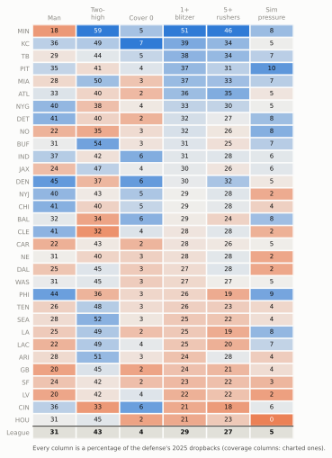
NoteFilm room: Minnesota Vikings 2025
Brian Flores’s Vikings defense (he has been Minnesota’s defensive coordinator since 2023, and still is in 2026) sits at one end of Figure 70.9, and its row at the top of Figure 70.10 is stranger than the bar.9 Minnesota played man coverage on just 18% of its charted 2025 dropbacks, the fewest in the league, and a two-high coverage on 59%, the most. Yet it sent at least one blitzer on 51% of dropbacks, the most in the league again (the average defense: 29%), and five or more rushers on 46%, also the most.
What to notice: “blitz” and “man” usually travel together, because a defense that sends extra rushers has fewer players left to cover and the simplest way to cover with fewer is man-to-man. The Vikings broke that link: five-man pressure from unexpected places with zone behind it, the zone-blitz family of Zone Blitzes and Simulated Pressure, on top of the two-high-to-Cover-0 range 06-06 charted for 2023–2025. A tendency card that said only “blitzes a lot” would send an offense into the game expecting man coverage, which is exactly the wrong answer.
When the labels change: the 2022/2023 source break
Here is the most important caveat in the chapter, drawn. Figure 70.11 follows four league-wide coverage shares from 2018 to 2025, the full span for which nflverse has labels.
TREND = cov.groupby("season").agg(man=("man", "mean"), two_high=("two_high", "mean"),
c3=("defense_coverage_type", lambda s: (s == "COVER_3").mean()),
c1=("defense_coverage_type", lambda s: (s == "COVER_1").mean())) * 100
NGS_TWO_HIGH = {2018: 32.9, 2021: 37.8, 2024: 40.4, 2025: 42.0} # published by NFL Next Gen Stats
fig, ax = plt.subplots(figsize=(6.4, 3.6))
ax.axvspan(2022.5, 2025.5, color=style.GRID, alpha=0.55, lw=0)
ax.text(2020.0, 55.5, "Next Gen Stats labels", ha="center", fontsize=7.5, color=style.INK_2)
ax.text(2024.0, 55.5, "FTN labels", ha="center", fontsize=7.5, color=style.INK_2)
# colours match the coverage-mix chart: green = two-high zone family, blue = Cover 3, orange = man family
SER = [("two_high", "Two-high", COV_COLOR["COVER_2"], "-"), ("man", "Man (all)", style.DEFENSE_DARK, (0, (4, 2))),
("c3", "Cover 3", COV_COLOR["COVER_3"], "-"), ("c1", "Cover 1", COV_COLOR["COVER_1"], "-")]
for k, lab, col, ls in SER:
ax.plot(TREND.index, TREND[k], color=col, lw=2, marker="o", ms=3.5, ls=ls)
ax.text(2025.18, TREND[k].iloc[-1], lab, fontsize=7.5, color=style.INK, va="center")
ax.plot(list(NGS_TWO_HIGH), list(NGS_TWO_HIGH.values()), ls="", marker="o", ms=6.5, mfc="none",
mec=style.INK_2, mew=1.0, label="Next Gen Stats published two-high rate")
ax.set_xlim(2017.6, 2026.1)
ax.set_ylim(15, 58)
ax.set_xticks(range(2018, 2026))
ax.set_ylabel("Share of labelled dropbacks (%)")
ax.grid(axis="x", visible=False)
ax.legend(fontsize=7, loc="lower left", frameon=False)
ax.set_title("The coverage labels changed hands after 2022")
plt.show()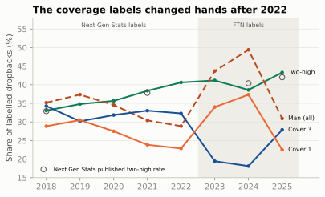
If you charted the man-coverage line without the shading, you’d write a story about a man-coverage revolution in 2023–2024 and a sudden retreat in 2025. There was no such revolution. Two different labelling operations, with different definitions and different people, met at the 2022/2023 boundary, and the FTN side itself seems to have drawn the man/zone line differently from one year to the next.10 The two-high series survives because “how many deep safeties after the snap” is easier to agree on than “was that underneath defender in man or in a zone that matches routes”: it matches the Next Gen Stats series published from tracking data (43.3% against 42.0% in 2025).
The coverage labels are not the only thing that changed at the break. In the participation file:
- Formation labels were SHOTGUN, SINGLEBACK, I_FORM, EMPTY, PISTOL, JUMBO and WILDCAT through 2022, and only SHOTGUN, UNDER CENTER and PISTOL from 2023. (That is why this chapter takes alignment from FTN’s
qb_locationinstead.) - Coverage labels gained COVER_9, COMBO and BLOWN in 2023 and lost PREVENT.
- Personnel strings changed format, from “1 RB, 1 TE, 3 WR” to a full list such as “1 C, 2 G, 1 QB, 1 RB, 2 T, 1 TE, 3 WR”. The
personnel_codefunction above reads both. ngs_air_yardsis empty from 2024; use play-by-play’sair_yards.
The working rule: compare teams within a season; compare seasons only within one source, and only after checking against an independent series. If a chart must cross the break, shade it, as Figure 70.11 does.
The caveats of charting data, in one place
Everything in the last three sections rests on people (or, for some fields, sensors) turning video into columns. Before you quote a charted number, run down this list.
- Definitions. Every flag means exactly what its dictionary says and no more.
is_motionis motion before or at the snap.n_blitzerscounts defenders FTN judged to be blitzing, which is not the same as “five or more rushers” (n_pass_rushers, also in participation asnumber_of_pass_rushers): a linebacker can blitz while a lineman drops into coverage, leaving four rushers, which is why the defensive dashboard shows both. Play-action is a run fake, but how convincing a fake has to be is the charter’s call. - Judgement and error. Coverage is inferred, from video by someone who doesn’t know the call or, for the later Next Gen Stats labels, by a model trained on such charting (about 89% right on the eight labels in its makers’ own test). Match coverages, which start as zone and turn into man by rule (pattern matching), and late rotations make “Cover 3 or Cover 1?” a genuine judgement. FTN’s COMBO and BLOWN tags exist because some snaps don’t fit a single label. No public figure tells you how often two charters would agree on the same play.
- What isn’t labelled. Coverage exists only on dropbacks, so a defense’s coverage mix is its mix against passes, which partly reflects which downs and distances opponents chose to throw on. Personnel and box counts fill every row of the participation file from 2023 on but about three in four before; formation labels fill about three rows in four before 2023 and four in five after.
- The source break (above): labels, formations and personnel strings all change between the 2022 and 2023 seasons.
- Timing. FTN charting arrives game by game during the season, but participation (personnel and coverage) arrives only after the season ends, so the current season’s personnel and coverage are missing until about February.
- Sample size. A team’s season has four or five hundred neutral early downs and about six hundred dropbacks, but a cell like “coverage on third-and-medium” holds perhaps fifty or sixty. A share’s standard error is about \(\sqrt{p(1-p)/n}\): at 30% from sixty snaps, plus or minus six points.
- Licence and credit. FTN’s charting is free to use under CC-BY-SA 4.0, which means you must credit FTN, and anything you publish from it must carry the same licence.
CautionCommon misconception
“The coverage label is what the defense called.” It’s what one charter, watching afterwards, judged the defense to have played. Usually that’s close to the call. But a well-disguised snap, a match coverage or a blown assignment can be labelled differently from what the coordinator signalled, and a different charting company might label the same snap differently again. Treat a team’s coverage mix as strong evidence about its habits and weak evidence about any single snap.
A one-page scouting report
Everything so far comes together in one artefact: a card you could hand a coach on Friday or carry to a game on Sunday. Game Planning Week showed what an NFL quality-control coach’s tendency report looks like, pages of down-and-distance tables built from film. The public-data version fits on one page, and its job is narrower: tell a watcher, in a glance, what this team does that the league doesn’t.
The example is the 2025 Rams, scouted the way Carolina’s staff had to in January 2026: the Panthers, the NFC’s fourth seed, hosted the Rams in the wild-card round, and the Rams won 34–31.11 The card uses only regular-season data that existed before that game.
The card rests on one small idea, which is worth seeing in code: a team’s tells are the measures on which it sits furthest from the average team, counted in standard deviations across the 32 teams. Many measures move together (a team that lives under center will also throw a lot from under center), so the function takes at most one tell from each family, and always at least one from the defense.
TELLS = { # metric: (family, offense or defense table, phrase when high, phrase when low)
"proe": ("run/pass", "off", "passes more than the situation predicts", "runs more than the situation predicts"),
"heavy": ("personnel", "off", "lives in heavy personnel (2+ backs, 3+ TEs or 6 OL)", "rarely uses heavy personnel"),
"uc": ("alignment", "off", "plays under center a lot", "lives in the shotgun"),
"uc_pass": ("alignment", "off", "throws from under center (the alignment tell is broken)", "runs from under center"),
"pistol": ("alignment", "off", "uses the pistol a lot", "rarely uses the pistol"),
"rpo": ("run/pass", "off", "leans on RPOs", "rarely uses RPOs"),
"motion": ("motion", "off", "moves before the snap on most plays", "rarely uses motion"),
"pa": ("play-action", "off", "fakes the run on many dropbacks", "rarely uses play-action"),
"nohuddle": ("tempo", "off", "plays without a huddle", "huddles almost every snap"),
"man": ("coverage", "def", "plays a lot of man coverage", "plays zone behind almost everything"),
"two_high": ("coverage", "def", "plays two-high after the snap", "plays single-high after the snap"),
"blitz": ("pressure", "def", "blitzes often", "rarely blitzes"),
"rush5": ("pressure", "def", "rushes five or more often", "rarely rushes more than four"),
}
def biggest_tells(team, off_m, def_m, n=3):
"""The n measures on which the team sits furthest from the average team, in standard deviations:
at most one per family, and at least one from the defense."""
rows = []
for k, (fam, side, hi, lo) in TELLS.items():
t = off_m if side == "off" else def_m
z = (t.loc[team, k] - t[k].mean()) / t[k].std()
rows.append((abs(z), z, k, fam, side, hi if z > 0 else lo, t.loc[team, k], t[k].mean()))
rows.sort(reverse=True)
best = {}
for row in rows: # strongest tell in each family
best.setdefault(row[3], row)
ranked = sorted(best.values(), reverse=True)
picked = ranked[:n]
if all(row[4] == "off" for row in picked): # make room for the defense's strongest tell
picked = ranked[:n - 1] + [next(row for row in ranked if row[4] == "def")]
return pickedThe card’s layout (plotting plumbing: panels, tiles and labels)
def stat_tile(ax, x, y, label, value, league, fmt="{:.0%}"):
"""One number, its label, and the league's number underneath (axes coordinates 0-1)."""
ax.text(x, y, fmt.format(value), fontsize=13, fontweight="bold", color=style.INK, ha="left",
va="baseline", transform=ax.transAxes)
ax.text(x, y - 0.17, label, fontsize=7, color=style.INK, ha="left", va="baseline", transform=ax.transAxes)
ax.text(x, y - 0.31, "league " + fmt.format(league), fontsize=6.5, color=style.INK_2, ha="left",
va="baseline", transform=ax.transAxes)
def panel(fig, rect, title, title_x):
"""An axes at `rect`, with its title set flush left at figure x = title_x."""
ax = fig.add_axes(rect)
fig.text(title_x, rect[1] + rect[3] + 0.016, title, fontsize=8.6, color=style.INK, fontweight="bold",
va="bottom")
return ax
def dot_rows(ax, rows):
"""rows: (label, team pass rate or None, league pass rate). Team = blue dot, league = dark tick
drawn on top, and both values printed at the right ("team / league")."""
yy = np.arange(len(rows))[::-1]
for yv, (_, team_v, lg_v) in zip(yy, rows):
if team_v is not None:
ax.scatter(team_v * 100, yv, s=42, color=style.SERIES[0], zorder=3, edgecolor=style.SURFACE, lw=0.6)
ax.plot([lg_v * 100] * 2, [yv - 0.3, yv + 0.3], color=style.INK, lw=1.6, zorder=4)
txt = (f"{100 * team_v:.0f}" if team_v is not None else "-") + f" / {100 * lg_v:.0f}"
ax.text(1.03, yv, txt, transform=ax.get_yaxis_transform(), fontsize=6.4, color=style.INK,
va="center", ha="left")
ax.text(1.03, len(rows) - 0.35, "team / lg", transform=ax.get_yaxis_transform(), fontsize=5.8,
color=style.INK_2, va="bottom", ha="left")
ax.set_yticks(yy, [r[0] for r in rows], fontsize=6.6)
ax.set_xlim(0, 100)
ax.set_ylim(-0.6, len(rows) - 0.4)
ax.axvline(50, color=style.BASELINE, lw=0.8)
ax.tick_params(axis="x", labelsize=6.5)
ax.grid(axis="y", visible=False)
COV_SHORT = {"COVER_0": "C0", "COVER_1": "C1", "2_MAN": "2M", "COVER_3": "C3", "COVER_9": "C9",
"COVER_2": "C2", "COVER_4": "Q", "COVER_6": "C6"}
def scouting_card(team, season, name=None):
"""A one-page tendency card for one team-season, built from public nflverse data."""
off_m, def_m = offense_metrics(season), defense_metrics(season)
lg = snaps[(snaps.season == season) & snaps.early_neutral]
ot = lg[lg.posteam == team]
fig = plt.figure(figsize=(6.6, 8.3))
fig.text(0.02, 0.99, f"OPPONENT CARD {name or team}, {season} regular season", fontsize=12,
fontweight="bold", color=style.INK, va="top")
fig.text(0.02, 0.962, "Neutral = win probability 20-80%, outside the last 2:00 of each half. "
f"Panel A: all neutral downs. Panels B-D: neutral 1st & 2nd downs ({len(ot)} snaps).\n"
f"Defense: all 2025 dropbacks (coverage: charted ones). Blue = {team}, dark tick or grey = league. "
"Sources: nflverse play-by-play, participation, FTN charting.", fontsize=6.6,
color=style.INK_2, va="top", linespacing=1.35)
# A. PROE by situation (all neutral downs, so third down appears)
ax = panel(fig, [0.19, 0.60, 0.28, 0.27], "A. Run or pass? PROE by situation", 0.02)
ps = proe_by_situation(team, season)
yy = np.arange(len(ps))[::-1]
ax.barh(yy, ps.proe, color=[style.SERIES[0] if v > 0 else style.SERIES[1] for v in ps.proe], height=0.62)
ax.axvline(0, color=style.INK_2, lw=0.9)
ax.set_yticks(yy, [f"{s} ({n})" for s, n in zip(ps.index, ps.n)], fontsize=6.6)
lim = max(20, np.ceil(ps.proe.abs().max() / 10) * 10)
ax.set_xlim(-lim, lim)
ax.tick_params(axis="x", labelsize=6.5)
ax.set_xlabel("pass rate over expected, percentage points\n(snaps in brackets)", fontsize=6.4)
ax.grid(axis="y", visible=False)
# B. personnel: how often, and how often they pass from it (groups the team used on 3%+ of snaps)
share = ot.pers.value_counts(normalize=True)
groups = [g for g in ["11", "12", "13", "21", "22", "10"] if share.get(g, 0) >= 0.03]
h = 0.045 * len(groups) + 0.03
ax = panel(fig, [0.66, 0.87 - h, 0.24, h], "B. Personnel: pass rate from each", 0.52)
rows = []
for g in groups:
tg = ot[ot.pers == g]
rows.append((f"{g}: {share.get(g, 0):.0%} of snaps", tg["pass"].mean() if len(tg) >= 10 else None,
lg[lg.pers == g]["pass"].mean()))
dot_rows(ax, rows)
ax.set_xlabel("pass rate (%)", fontsize=6.4)
# C. where the quarterback stands
ax = panel(fig, [0.19, 0.39, 0.25, 0.12], "C. Where the QB stands: pass rate", 0.02)
rows = []
for code, lab in [("U", "Under center"), ("S", "Shotgun"), ("P", "Pistol")]:
tg = ot[ot.qb_location == code]
rows.append((f"{lab}: {(ot.qb_location == code).mean():.0%}", tg["pass"].mean() if len(tg) >= 10 else None,
lg[lg.qb_location == code]["pass"].mean()))
dot_rows(ax, rows)
# D. offensive tiles
ax = panel(fig, [0.55, 0.38, 0.44, 0.13], "D. Pre-snap habits (play-action: of dropbacks)", 0.52)
ax.axis("off")
for i, (k, lab) in enumerate([("motion", "motion"), ("pa", "play-action"),
("rpo", "RPO"), ("nohuddle", "no-huddle")]):
stat_tile(ax, i * 0.25, 0.62, lab, off_m.loc[team, k], off_m[k].mean())
# E. coverage after the snap, with its own legend
ax = panel(fig, [0.24, 0.155, 0.34, 0.15], "E. Coverage after the snap (charted dropbacks)", 0.02)
c = cov[cov.season == season]
ct = c[c.defteam == team]
bars = [(f"{team}, 1st-2nd down", coverage_mix(ct[ct.down <= 2]), len(ct[ct.down <= 2])),
("League", coverage_mix(c[c.down <= 2]), None),
(f"{team}, 3rd down", coverage_mix(ct[ct.down == 3]), len(ct[ct.down == 3])),
("League", coverage_mix(c[c.down == 3]), None)]
yy = np.array([3.2, 2.4, 1.0, 0.2])
for yv, (lab, mixv, n) in zip(yy, bars):
lft = 0
for k in COV_ORDER:
ax.barh(yv, mixv[k] * 100, left=lft, color=COV_COLOR[k], height=0.62, edgecolor=style.SURFACE, lw=0.4)
if mixv[k] >= 0.07:
ax.text(lft + mixv[k] * 50, yv, COV_SHORT[k], fontsize=5.8, ha="center", va="center",
color="white" if k in ("COVER_0", "COVER_1", "COVER_3", "COVER_2") else style.INK)
lft += mixv[k] * 100
ax.set_yticks(yy, [lab + (f" ({n})" if n else "") for lab, _, n in bars], fontsize=6.6)
ax.set_xlim(0, 100)
ax.tick_params(axis="x", labelsize=6.5)
ax.grid(False)
handles = [plt.Rectangle((0, 0), 1, 1, color=COV_COLOR[k]) for k in COV_ORDER]
ax.legend(handles, [f"{COV_SHORT[k]} {COV_NAME[k]}" for k in COV_ORDER], ncol=4, fontsize=5.7,
loc="upper center", bbox_to_anchor=(0.33, -0.17), frameon=False, handlelength=0.9,
columnspacing=0.8, handletextpad=0.3)
# F. defensive tiles
ax = panel(fig, [0.66, 0.135, 0.32, 0.17], "F. Defense in four numbers", 0.62)
ax.axis("off")
for i, (k, lab) in enumerate([("man", "man coverage"), ("two_high", "two-high"),
("blitz", "1+ blitzer"), ("rush5", "5+ rushers")]):
stat_tile(ax, (i % 2) * 0.5, 0.78 - (i // 2) * 0.52, lab, def_m.loc[team, k], def_m[k].mean())
# G. the tells
fig.text(0.02, 0.058, "Biggest tells (furthest from the average team; one per family):", fontsize=7.6,
fontweight="bold", color=style.INK, va="top")
for i, (_, z, k, fam, side, phrase, v, m) in enumerate(biggest_tells(team, off_m, def_m)):
fmt = (lambda q: f"{q:+.1f}") if k == "proe" else (lambda q: f"{100 * q:.0f}%")
fig.text(0.04, 0.036 - i * 0.017, f"{i + 1}. {'Offense' if side == 'off' else 'Defense'} {phrase}: "
f"{fmt(v)} (league {fmt(m)})", fontsize=7.0, color=style.INK, va="top")
return figscouting_card("LA", 2025, name="Los Angeles Rams")
plt.show()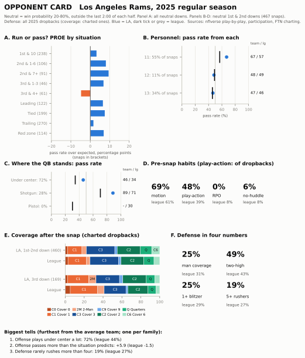
en25 = snaps[(snaps.season == 2025) & snaps.early_neutral]
la25 = en25[en25.posteam == "LA"]
CARD = {}
for who, d in (("la", la25), ("lg", en25)):
CARD[f"{who}_13_share"] = (d.pers == "13").mean()
CARD[f"{who}_13_pass"] = d[d.pers == "13"]["pass"].mean()
CARD[f"{who}_11_pass"] = d[d.pers == "11"]["pass"].mean()
CARD[f"{who}_uc_pass"] = d[d.qb_location == "U"]["pass"].mean()
D25m = DEF25.mean()
SIM_OF_BLITZ = DEF25.sim / DEF25.blitz # of the snaps with a blitzer, how many rushed only four
assert DEF25.sim.rank(ascending=False)["LA"] <= 4 and SIM_OF_BLITZ["LA"] > SIM_OF_BLITZ.mean() + 0.1
assert 0.28 < SIM_OF_BLITZ["LA"] < 0.38 and OFF25.loc["LA", "rpo"] < 0.01 and OFF25.loc["LA", "nohuddle"] < 0.1Walk the card the way a defensive coach would, top to bottom.
The run/pass question. The PROE bars say the Rams passed more than expected in most situations, and the personnel panel says from what. They threw on 67% of their 11-personnel snaps (league 57%), and they lived in 13 personnel, three tight ends, a grouping the league used on only 6% of neutral early downs. The Rams used it on 34%, and passed from it about as often as the league did (47% against 46%), so the grouping itself gave nothing away; what it did was drag a defense into its bigger personnel. The quarterback-alignment panel repeats the dashboard’s alarm (under center meant a pass 46% of the time for the Rams, 34% for the league), and its shotgun row carries a second one, which the first drill below asks you to read.
The pre-snap habits. Motion on most snaps, play-action on a large share of dropbacks, almost no RPOs and almost no no-huddle. That is a team that will give a defense time to substitute and set, then make it adjust anyway.
The defense. The coverage bars and the four tiles describe a zone defense: man coverage on 25% of charted dropbacks (average team 31%), two-high after the snap on 49% (average 43%), and a blitzer on 25% (average 29%). Read the two pressure tiles together: five or more rushed on 19%, so on about a third of the Rams’ blitzes (33%, against the average defense’s 18%) the blitzer was replaced by someone dropping out: a simulated pressure, more often than all but a few defenses. A little more zone and two-high than average, a little less pressure, and more disguise inside the pressure it did bring: no single extreme to build a plan around, which is itself worth knowing.
What the card can’t say. The public files don’t record receiver splits, bunch or nub sets, the back’s exact offset or route concepts, and they record the run scheme only coarsely, all things a pro tendency report is built on. They do record more than this card uses: FTN’s starting_hash (left, middle or right, on essentially every snap) joined to play-by-play’s run_location gives a field-or-boundary split, and the box count and the defense’s personnel from Figure 70.1 would give a light-box rate; both are good first additions. The Rams’ 2025 offense also had a play-caller (Sean McVay) and quarterback who would both be on the field for the game, so the prior was a strong one; for a 2026 opponent with a new coordinator, the card would have to lean on the 2026 games so far. And the defensive panel uses labels that only arrived after the season, so a mid-season version would have to borrow them from the previous year, or chart them by hand. How far can you trust a borrowed coverage mix?
cmix = cov[cov.season >= 2023].groupby(["season", "defteam"])[["two_high", "man"]].mean().reset_index()
pairs = cmix.merge(cmix.assign(season=cmix.season + 1), on=["season", "defteam"], suffixes=("", "_prev"))
CARRY_COV = pairs.groupby("season").apply(lambda g: pd.Series({
"two_high": g.two_high.corr(g.two_high_prev), "man": g.man.corr(g.man_prev)}))
print(CARRY_COV.round(2).rename(index=lambda y: f"{y - 1} -> {y}").to_string())
assert CARRY_COV.two_high.min() > 0.35 and CARRY_COV.man.between(0.35, 0.6).all() two_high man
season
2023 -> 2024 0.46 0.46
2024 -> 2025 0.69 0.45About as far as last season’s PROE under the same head coach: within FTN’s charting, a defense’s two-high share correlated 0.46 and 0.69 with its share the season before, and its man share about 0.45. The test stays inside FTN’s seasons, and it uses correlations (does a team keep its place in the league?) rather than raw differences, because FTN’s own man/zone line moved from one year to the next, as the source-break chart showed. nflverse has no coordinator column, so this can’t be split by whether the defensive coordinator stayed.
Try it on any team-season from 2022 to 2025:
scouting_card("CAR", 2025, name="Carolina Panthers") # or any team abbreviation and season, 2022-2025
plt.show()Grading the card
A card is a forecast, so score it like one. During the game, before each snap, write your call: run or pass, and for dropbacks, man or zone. Afterwards, load the game’s play-by-play, count your hits on neutral early downs, and compare with two baselines: the team’s season pass rate (“always guess the more common one”) and the alignment rule from 08-02, which here reads shotgun means pass, under center or pistol means run. It helps to know how high those bars are before the game.
g = en25[en25.qb_location.isin(["U", "S", "P"])].copy()
g["align_rule"] = (g.qb_location == "S").astype(float) # gun = pass, else run
g["majority"] = (g.groupby("posteam")["pass"].transform("mean") >= 0.5).astype(float)
g["card_rule"] = (g.groupby(["posteam", "qb_location"])["pass"].transform("mean") >= 0.5).astype(float)
HIT = {k: (g[k] == g["pass"]).mean() for k in ("majority", "align_rule", "card_rule")}
la_g = g[g.posteam == "LA"]
HIT_LA = {k: (la_g[k] == la_g["pass"]).mean() for k in ("majority", "align_rule", "card_rule")}
print("Hit rate, 2025 neutral early downs: " + " ".join(f"{k} {v:.0%}" for k, v in HIT.items()))
print("Same rules on the Rams' snaps: " + " ".join(f"{k} {v:.0%}" for k, v in HIT_LA.items()))
assert abs(HIT_LA["card_rule"] - HIT_LA["align_rule"]) < 0.01 and HIT_LA["align_rule"] < HIT["align_rule"]
assert abs(HIT["card_rule"] - HIT["align_rule"]) < 0.01Hit rate, 2025 neutral early downs: majority 54% align_rule 68% card_rule 68%
Same rules on the Rams' snaps: majority 58% align_rule 64% card_rule 64%The alignment rule gets about two calls in three right league-wide (68%), far above always guessing the team’s more common choice (54%). The “card rule” uses each team’s own pass rate from each alignment (call pass whenever that team passed more than half the time from it), and it barely adds anything (68%). On the Rams the alignment rule drops to 64%, and the card rule gains essentially nothing on it, because even the Rams’ broken tell (a pass 46% of the time from under center) still leans run. That is the honest lesson: for a yes-or-no call, a card mostly changes your confidence, not your call. Score your confidence too. If you write a probability before each snap (“pass, 60%”), the log loss from the xpass section rewards the reader who knew the Rams’ under-center snaps were a coin flip and punishes the one who was sure. Film Study and Charting turns this into a full charting routine.
TipWatch for it
The opponent card, live. Before the game:
- Build the card for the team you care about most, with
scouting_card, from the most recent season with the same play-caller. If he is new, note that and put more weight on this season’s games so far. - Circle three tells: the card’s own top three, or the cells furthest from league on the dashboards. Write each as a prediction with a number (“under center: expect a pass about 45% of the time, not the league’s 35%”).
During the game:
- On every early down in a close game, call run or pass before the snap, and say how sure you are, using personnel first (count the tight ends and backs as they jog on), then the quarterback’s alignment (shotgun, or under center and pistol), then your card’s adjustments for this team. Note when motion happens and whether it changed your call.
- On dropbacks, call what the broadcast lets you see. The standard sideline camera often loses the deep safeties after the snap, so don’t pretend: watch the corners’ first steps (turning to run with a receiver suggests man; opening up to the quarterback suggests zone) and check the shell on the replay’s wide angle. A full coverage call per snap is an All-22 job, which Film Study and Charting sets up.
- Mark the moments the filter excludes: two-minute drills and blowouts. Don’t score those; the card wasn’t built for them.
Afterwards, grade yourself against the two baselines above, and note which tell held and which one the opponent broke, maybe on purpose.
Predict the play
The pictures use the course’s position letters: on offense X, Z and H are wide receivers, Y and U tight ends, R the running back; on defense E is an end, T a tackle, M and W linebackers (S, the Sam linebacker, appeared in Figure 70.1), $ the nickel back, C a cornerback, FS and SS the safeties.
TipPredict the play
First-and-10 at your own 35, second quarter, tied. The 2025 Rams line up in 11 personnel with Stafford in the shotgun, three receivers to the right. League-wide, what does this look usually mean? What does the Rams’ card (Figure 70.12, panel C) say instead, and what could a defense do with that?
off11 = [p.moved(w=-2.2) if p.key == "RB" else p for p in offense("gun_trips")]
d1 = Play(off11, defense("nickel", "single_high", off11), los=45, to_go=10, title="1st & 10, own 35, tied")
d1.draw(lateral=(-20, 21), window=(-8, 16), width_in=5.6)
plt.show()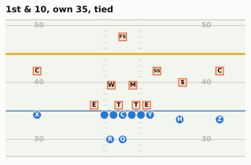
TipAnswer
g11 = en25[(en25.pers == "11") & (en25.qb_location == "S")]
LG_G11, RAMS_G11 = g11["pass"].mean(), g11[g11.posteam == "LA"]["pass"].mean()
RAMS_G11_N = int((g11.posteam == "LA").sum())
la_gun = la25[la25.qb_location == "S"]
RAMS_GUN, RAMS_GUN_N, RAMS_GUN_SHARE = la_gun["pass"].mean(), len(la_gun), (la25.qb_location == "S").mean()
print(f"11 personnel, shotgun, neutral early downs 2025: league pass rate {LG_G11:.0%}; "
f"Rams {RAMS_G11:.0%} on {RAMS_G11_N} snaps")
print(f"All Rams shotgun snaps: {RAMS_GUN:.0%} dropbacks on {RAMS_GUN_N} ({RAMS_GUN_SHARE:.0%} of their snaps)")
assert RAMS_GUN > 0.85 and RAMS_G11 > LG_G11 + 0.111 personnel, shotgun, neutral early downs 2025: league pass rate 70%; Rams 85% on 103 snaps
All Rams shotgun snaps: 89% dropbacks on 132 (28% of their snaps)League-wide, 11 personnel in the shotgun is a passing look: offenses dropped back on about 70% of those snaps. For the Rams it was close to a certainty: 85% of 103 snaps from this exact look, and 89% of all their shotgun snaps. This is the other half of the broken tell. The Rams moved most of their runs under center, which is why under center was a coin flip for them; the price was that the shotgun, used on only 28% of their neutral early downs, announced a dropback about nine times in ten. So the alignment still told a defense something against the Rams, just not what it tells against everyone else.
What a defense can do with it: on a Rams shotgun snap, play the pass first. The linebackers can widen and get depth in their drops with less fear of the run, the edge rushers can rush upfield instead of reading the run, and a defensive coordinator can save his pass-down calls for these snaps. The risk is the occasional run, about one snap in 7 from this look, which is exactly the tendency breaker of 08-02: a defense that sells out against the pass will meet it eventually.
TipPredict the play
Third-and-6 at midfield. The 2025 Vikings show two safeties, both inside linebackers walked up into the A gaps on either side of the center, six defenders on or near the line. You’re on offense. The Vikings’ season numbers say “blitzes more than anyone, plays the least man”. Is pressure coming, and should the quarterback expect man or zone behind it? How far would you trust the card here?
off2 = offense("gun_2x2")
spots = {"SDE": (1.0, 5.5), "SDT": (1.0, 2.4), "WDT": (1.0, -2.4), "WDE": (1.0, -5.5),
"MIKE": (1.8, 1.0), "WILL": (1.8, -1.0), "FS": (9.5, -8.0), "SS": (9.5, 8.0)}
nick2 = [p.moved(d=spots[p.key][0], w=spots[p.key][1]) if p.key in spots else p
for p in defense("nickel", "two_high", off2)]
d2 = Play(off2, nick2, los=60, to_go=6, title="3rd & 6, midfield")
d2.note("M and W: A-gap mug", at=(4.4, 0.0))
d2.draw(lateral=(-20, 20), window=(-8, 15), width_in=5.6)
plt.show()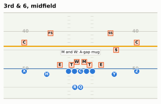
TipAnswer
t3 = snaps[(snaps.season == 2025) & (snaps.qb_dropback == 1) & (snaps.down == 3) & snaps.ydstogo.between(4, 8)]
c3 = cov[(cov.season == 2025) & (cov.down == 3) & cov.ydstogo.between(4, 8)]
mn3 = c3[c3.defteam == "MIN"]
MIN_BLITZ3 = (t3[t3.defteam == "MIN"].n_blitzers.dropna() > 0).mean()
LG_BLITZ3 = (t3.n_blitzers.dropna() > 0).mean()
MIN_MAN3, MIN_N3, LG_MAN3 = mn3.man.mean(), len(mn3), c3.man.mean()
MIN_C0_3 = (mn3.defense_coverage_type == "COVER_0").mean()
LG_C0_3 = (c3.defense_coverage_type == "COVER_0").mean()
SE_MAN3 = np.sqrt(MIN_MAN3 * (1 - MIN_MAN3) / MIN_N3)
print(f"3rd & 4-8 dropbacks, 2025: Vikings sent a blitzer on {MIN_BLITZ3:.0%} (league {LG_BLITZ3:.0%})")
print(f"Man coverage: Vikings {MIN_MAN3:.0%} of {MIN_N3} labelled snaps (+/- {SE_MAN3:.0%}); league {LG_MAN3:.0%}")
print(f"Cover 0: Vikings {MIN_C0_3:.0%} ({(mn3.defense_coverage_type == 'COVER_0').sum()} snaps); league {LG_C0_3:.0%}")
assert abs(MIN_MAN3 - LG_MAN3) < 1.2 * SE_MAN3 and abs(MIN_BLITZ3 - LG_BLITZ3) < 0.04
assert DEF25.loc["MIN", "blitz"] > MIN_BLITZ3 + 0.08 and MIN_MAN3 > 2 * DEF25.loc["MIN", "man"]
assert 0.33 < MIN_BLITZ3 < 0.45
assert abs(MIN_C0_3 - LG_C0_3) < 0.043rd & 4-8 dropbacks, 2025: Vikings sent a blitzer on 39% (league 39%)
Man coverage: Vikings 43% of 56 labelled snaps (+/- 7%); league 49%
Cover 0: Vikings 7% (4 snaps); league 6%This drill has a twist, and it is the reason to split a card by situation. The Vikings’ season numbers say “blitz, with zone behind it”. On third-and-4 to 8 neither held. They sent a blitzer on 39% of these dropbacks, the same as the league (39%), against 51% across the whole season: their extra pressure came on early downs, when offenses least expect it. And they played man on 43% of 56 labelled snaps, more than twice their season rate and within one standard error (about 7%) of the league’s 49%. Cover 0, the all-out blitz this look can hide, was 7% of their snaps here, about the league’s rate.
So the honest prediction is “an ordinary third-down defense dressed up as an unusual one”: pressure about two times in five, and man or zone close to a coin flip, so be ready for both. That points the quarterback at answers that work against either: a quick throw (a hot route or a sight adjustment) if six really come, and a route that beats man and finds the window in zone, at or past the sticks. The capped slots in the picture are the defense telling you it can play either way behind the mug.
And the trust question: 56 snaps means a standard error of about 7% on that man share. The card tells you the Vikings’ style with some confidence; on any one third down it can only shade the odds, and here the split card says even the style was different on this down.
TipPredict the play
Fourth quarter, 6:10 left, down 10, timeouts in hand. First-and-10 at your own 30. The win probability model gives the offense about one chance in nine. It’s in 11 personnel in the shotgun, and the play is a handoff for 4 yards. Three questions: roughly what is this snap’s xpass? What is this snap’s pass_oe? And should it count in the team’s PROE?
off3 = [p.moved(w=-2.2) if p.key == "RB" else p for p in offense("gun_2x2")]
nick3 = [p.moved(d=5.0, w=-6.0) if p.key == "WILL" else p for p in defense("nickel", "two_high", off3)]
d3 = Play(off3, nick3, los=40, to_go=10, title="Q4 6:10, down 10, 1st & 10 own 30")
d3.handoff("RB", t=0.6)
d3.run("RB", [(1.0, 2.3), (5.0, 3.3), (9.0, 3.7)], delay=0.3)
d3.draw(lateral=(-20, 20), window=(-8, 16), width_in=5.6)
plt.show()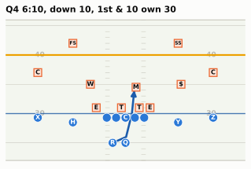
TipAnswer
XP_SCRIPT = xpass_model(xp_features(situation(1, 10, 70, -10, 370, 4)))[0]
similar = plays[(plays.qtr == 4) & plays.score_differential.between(-11, -9)
& plays.game_seconds_remaining.between(300, 450) & (plays.down == 1)]
XP_SIMILAR = similar.xpass.mean()
print(f"Our model's xpass: {XP_SCRIPT:.2f}; this run's pass_oe on our model: {100 * (0 - XP_SCRIPT):+.0f}")
print(f"nflverse xpass on the real snaps like it: {XP_SIMILAR:.2f}")
print(f"Real first downs like it (Q4, 5:00-7:30 left, down 9-11): pass rate {similar['pass'].mean():.0%}, "
f"average win probability {similar.wp.mean():.0%} ({len(similar):,} snaps, 2016-2025)")
assert similar.wp.mean() < 0.2 and XP_SIMILAR - XP_SCRIPT > 0.1Our model's xpass: 0.67; this run's pass_oe on our model: -67
nflverse xpass on the real snaps like it: 0.84
Real first downs like it (Q4, 5:00-7:30 left, down 9-11): pass rate 84%, average win probability 11% (510 snaps, 2016-2025)Real offenses in this spot passed on 84% of their first downs, and nflverse’s model agrees (xpass about 0.84 on those snaps). This chapter’s small model says only 0.67: it is weakest in exactly these late, lopsided corners, where it has fewest examples and its simple score-and-clock terms bend least. The run’s pass_oe is 0 minus xpass, times 100: about -84 on nflverse’s model, -67 on ours. And it doesn’t count in a neutral PROE: the win probability on snaps like this averages about 11%, below the 20% floor, and the filter drops it.
Why drop it, if xpass already priced the situation? Two reasons. First, the choice isn’t the one PROE is trying to measure. A team down 10 with 6:10 and its timeouts still has time for two drives, and a two-high defense with a light box is handing it four free yards; running here is late-game management against a defense playing soft, not the early-down style a scouting card wants to capture, and xpass can’t see the defense. Second, the models are least trustworthy here: on this one snap ours and nflverse’s disagree by 17 points, and a pass_oe that depends that much on which model you used is not a measurement of the coach. Keep snaps like this out, and a team’s PROE describes the decisions it makes when it has a free choice, which is what an opponent can plan against.
Takeaways
- A raw pass rate measures the scoreboard as much as the play-caller. Teams that trail pass, teams that lead run; in 2025 the situations alone predicted a pass on 70% of the Jets’ snaps and 56% of the Rams’. Filter to neutral situations (win probability 20–80%, outside the last two minutes of each half, first and second down) before you read anything into it.
- xpass is a model of the league-average play-caller, and PROE is the difference between what a team did and what that model expected, in percentage points, read against the league’s own slightly negative average. A thirty-line logistic regression on down, distance, field position, score and clock gets close to nflverse’s model. PROE counts the play that was run, so RPO reads, checks at the line and screens all sit inside it.
- PROE describes style, not quality. It correlates only loosely with EPA (about 0.3), the arrow runs both ways, and a dominant run game (the 2024 Eagles) can drive it far below zero on the way to a Super Bowl.
- Style is steadier than results. Four games of PROE predict a team’s rest of season better than eight games of EPA. Across seasons PROE carries over moderately when the play-caller and the key personnel stay, and either one changing can reset it.
- Personnel, alignment, RPOs, motion, play-action and no-huddle each get one number per team; read them side by side and look for the broken tells. Alignment has three values: shotgun means pass, under center and pistol mean run, unless a team (the Rams) has broken the tell on purpose.
- Coverage labels are charted judgements: post-snap only, dropbacks only, and coded differently on each side of the 2022/2023 break. Compare teams within a season; never chart a cross-break trend without marking it. Split a defense’s card by down: the Vikings’ league-leading blitz rate was ordinary on third-and-medium. A one-page card puts all of it together, and grading it live, with your confidence as well as your call, tells you whether it works.
Connections
Builds on: EPA and the signal-versus-noise habit from Expected Points, EPA, and Success Rate; tendencies, the tendency table and the self-scout from Constraint Theory and Sequencing; the pro tendency report from Game Planning Week; the data files from Working with nflverse Data in Python; and the coverage vocabulary of Part 6, especially Disguise, Rotation and Split-Field.
Sets up:
- Tracking Data and the Big Data Bowl: measuring coverage and motion from player coordinates instead of charters’ labels, and the limits of each.
- Scheme and Fantasy: PROE, personnel and play-action as the context behind a player’s usage.
- Watching Live and Film Study and Charting: the opponent card as part of the live checklist, and charting a game yourself when the public files run out.
If you want to go deeper: the nflfastR documentation for add_xpass() and the nflverse data dictionaries for play-by-play, participation and FTN charting, which define every column used here;12 Ben Baldwin’s Open Source Football write-ups of the nflfastR models; and FTN’s own notes on how its charting is done, before you lean hard on any single label.
AP awards, 2025 season (NFL Honors, February 5, 2026): Matthew Stafford MVP, NFL-leading 46 touchdown passes. https://amp.nfl.com/news/list-of-nfl-honors-award-winners-from-2025-nfl-season. Pass rates, trailing shares and win probabilities in this chapter are its own calculations from nflverse play-by-play (regular season; runs and dropbacks, sacks and scrambles counted as dropbacks).↩︎
Participation for 2023 on is supplied by FTN after the season ends, under a CC-BY-SA 4.0 licence. In season, nflverse’s automated jobs rebuild play-by-play after each game window (Thursday, Sunday early and late, Sunday and Monday night) and again every morning, and check FTN for new charting every six hours; participation is rebuilt by hand once FTN delivers it. Workflow schedules: https://github.com/nflverse/nflverse-pbp/blob/master/.github/workflows/update_data.yaml, https://github.com/nflverse/nflverse-ftn/tree/main/.github/workflows. Data dictionaries: https://nflreadr.nflverse.com/articles/dictionary_participation.html, https://nflreadr.nflverse.com/articles/dictionary_ftn_charting.html; release assets at https://github.com/nflverse/nflverse-data/releases.↩︎
nflfastR reference, “Compute expected dropback probability” (
add_xpass(), which addsxpassandpass_oe): https://www.nflfastr.com/reference/add_xpass.html; play-by-play field definitions at https://nflreadr.nflverse.com/articles/dictionary_pbp.html. The model’s source (R/helper_add_xpass.R, author Ben Baldwin) returnsNAbefore 2006, “since that was before NFL started marking scrambles”, and feeds the model down, yards to go, yard line, quarter, win probability, Vegas-adjusted win probability, era, score differential, home, seconds left in the half, both teams’ timeouts and roof type (outdoors, retractable, dome): https://github.com/nflverse/nflfastR/blob/master/R/helper_add_xpass.R. The model is stored as an XGBoost model in the fastrmodels package (https://github.com/nflverse/fastrmodels);add_xpass()first shipped in nflfastR 3.1.1 (October 2020), described in its NEWS as “our experimental expected pass model”.↩︎Super Bowl LIX, February 9, 2025, Caesars Superdome: Philadelphia 40, Kansas City 22 (course fact sheet; https://www.cbsnews.com/amp/news/nfl-mvp-super-bowl-jalen-hurts-eagles). Barkley’s 2,005 regular-season rushing yards: Pro Football Reference, https://www.pro-football-reference.com/players/B/BarkSa00.htm. Kellen Moore hired as offensive coordinator and play-caller in February 2024, replacing Brian Johnson: https://www.inquirer.com/eagles/eagles-hire-kellen-moore-offensive-coordinator-20240205.html; Kevin Patullo was the 2025 coordinator (course fact sheet).↩︎
2026 coordinators from the course fact sheet (checked October 2026) and the reporting it cites, including https://www.profootballrumors.com/2026/02/2026-nfl-offensive-defensive-coordinator-search-tracker and https://en.wikipedia.org/wiki/2026_NFL_season.↩︎
James Reber (NFL Next Gen Stats), “NFL trend watch: heavy personnel could shape Super Bowl LX showdown between Patriots and Seahawks” (offenses used fewer than three wide receivers on 41.7% of 2025 plays): https://www.nfl.com/news/nfl-trend-watch-heavy-personnel-could-shape-super-bowl-lx-showdown-between-patriots-and-seahawks.↩︎
PFF: Daire Carragher, “NFL pre-snap motion usage reaches new highs across the NFL,” February 23, 2026 (63.9% shift or motion in 2025): https://www.pff.com/news/nfl-pre-snap-motion-usage-reaches-new-highs-across-the-nfl. ESPN Analytics’ motion-at-the-snap figures (4% of plays in 2017, 22% in 2023), from Seth Walder as quoted by Ben Solak, The Ringer, January 25, 2024: https://www.theringer.com/nfl/2024/1/25/24050457/kansas-city-chiefs-baltimore-ravens-afc-championship-steve-spagnuolo-mike-macdonald-defense-motion.↩︎
nflverse participation data: seasons 2016-2022 from NFL Next Gen Stats, 2023 on from FTN; coverage fields filled on about 41-43% of rows in 2018-2022 and 49-50% in 2023-2025 (essentially all dropbacks), empty for 2016-2017. Course fact sheet §7 and the participation dictionary cited above. Next Gen Stats’ coverage classifier (launched for 2022) uses exactly the eight pre-2023 labels (Cover 0, 1 and 2 man; Cover 2, 3, 4 and 6 zone; prevent); it reads player-tracking data and was trained on 2018-2020 plays charted by football specialists from film, scoring 88.9% on the 2021 season: AWS Machine Learning Blog, “Identifying defense coverage schemes in NFL’s Next Gen Stats,” February 10, 2023, https://aws.amazon.com/blogs/machine-learning/identifying-defense-coverage-schemes-in-nfls-next-gen-stats/. nflverse does not document, season by season, whether a pre-2023 label is a human chart or the model’s.↩︎
Brian Flores, Vikings defensive coordinator since 2023 and retained for 2026 (course fact sheet; https://www.vikings.com/team/coaches-roster/brian-flores; he joined on February 6, 2023). Coverage and blitz shares are this chapter’s calculation from nflverse participation (FTN-charted coverage) and FTN charting (
n_blitzers).↩︎Man share of labelled dropbacks in nflverse participation: 28.8% (2022), 41.2% (2023), 48.3% (2024), 30.8% (2025), all blown/combination labels included (course fact sheet §7, which flags the jump as a coding artefact); this chapter’s figure leaves those labels out. Next Gen Stats’ published two-high rate: 32.9% (2018), 37.8% (2021), 40.4% (2024), 42.0% (2025), https://www.nfl.com/news/the-coverage-that-turned-the-seahawks-into-super-bowl-winners-and-is-taking-the-nfl-by-storm.↩︎
2025-26 NFL playoffs, wild-card round, January 10, 2026, Bank of America Stadium: Los Angeles Rams 34, Carolina Panthers 31 (Stafford’s 19-yard touchdown pass to Colby Parkinson with 38 seconds left); Carolina was the NFC’s fourth seed (8-9, NFC South champion), the Rams the fifth (12-5). Box score: https://www.pro-football-reference.com/boxscores/202601100car.htm; seeds: https://en.wikipedia.org/wiki/2025%E2%80%9326_NFL_playoffs.↩︎
nflverse data dictionaries: play-by-play https://nflreadr.nflverse.com/articles/dictionary_pbp.html, participation and FTN charting as cited above; nflreadpy: https://github.com/nflverse/nflreadpy; Open Source Football, including Ben Baldwin’s post on the nflfastR models (which fastrmodels cites for the xpass model’s code): https://opensourcefootball.com/posts/2020-09-28-nflfastr-ep-wp-and-cp-models/.↩︎